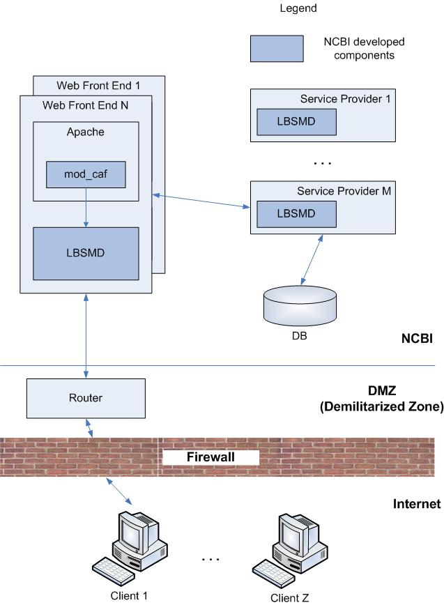
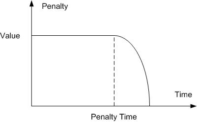
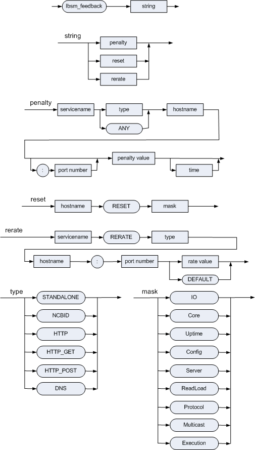

Overview
Introduction
Most of the applications discussed in this chapter are built on a regular basis, at least once a day from the latest sources, and if you are in NCBI, then you can find the latest version in the directory: $NCBI/c++/Release/bin/ (or $NCBI/c++/Debug/bin/).
Chapter Outline
The following is an outline of the topics presented in this chapter:
DATATOOL: Code Generation and Data Serialization Utility
DATATOOL source code is located at c++/src/serial/datatool; this application can perform the following:
Generate C++ data storage classes based on ASN.1, DTD or XML Schema specification to be used with NCBI data serialization streams.
Convert ASN.1 specification into a DTD or XML Schema specification and vice versa.
Convert data between ASN.1, XML and JSON formats.
Note: Because ASN.1, XML and JSON are, in general, incompatible, the last two functions are supported only partially.
The following additional topics are discussed in subsections:
Invocation
The following topics are discussed in this section:
Main Arguments
See Table 1.
1. Main arguments
| Argument | Effect | Comments |
|---|---|---|
| -h | Display the DATATOOL arguments | Ignores other arguments |
| -m <file> | ASN.1 or DTD module file(s) | Required argument |
| -M <file> | External module file(s) | Is used for IMPORT type resolution |
| -i | Ignore unresolved types | Is used for IMPORT type resolution |
| -f <file> | Write ASN.1 module file | |
| -fx <file> | Write DTD module file | "-fx m" writes modular DTD file |
| -fxs <file> | Write XML Schema file | |
| -fd <file> | Write specification dump file in datatool internal format | |
| -ms <string> | Suffix of modular DTD or XML Schema file name | |
| -dn <string> | DTD module name in XML header | No extension. If empty, omit DOCTYPE declaration. |
| -v <file> | Read value in ASN.1 text format | |
| -vx <file> | Read value in XML format | |
| -F | Read value completely into memory | |
| -p <file> | Write value in ASN.1 text format | |
| -px <file> | Write value in XML format | |
| -pj <file> | Write value in JSON format | |
| -d <file> | Read value in ASN.1 binary format | -t argument required |
| -t <type> | Binary value type name | See -d argument |
| -e <file> | Write value in ASN.1 binary format | |
| -xmlns | XML namespace name | When specified, also makes XML output file reference Schema instead of DTD |
| -sxo | No scope prefixes in XML output | |
| -sxi | No scope prefixes in XML input | |
| -logfile <File_Out> | File to which the program log should be redirected | |
| conffile <File_In> | Program's configuration (registry) data file | |
| -version | Print version number | Ignores other arguments |
Code Generation Arguments
See Table 2.
2. Code generation arguments
| Argument | Effect | Comments |
|---|---|---|
| -od <file> | C++ code definition file | See Definition file |
| -ods | Generate an example definition file (e.g. MyModuleName._sample_def) | Must be used with another option that generates code such as -oA. |
| -odi | Ignore absent code definition file | |
| -odw | Issue a warning about absent code definition file | |
| -oA | Generate C++ files for all types | Only types from the main module are used (see -m and -mx arguments). |
| -ot <types> | Generate C++ files for listed types | Only types from the main module are used (see -m and -mx arguments). |
| -ox <types> | Exclude types from generation | |
| -oX | Turn off recursive type generation | |
| -of <file> | Write the list of generated C++ files | |
| -oc <file> | Write combining C++ files | |
| -on <string> | Default namespace | The value "-" in the Definition file means don't use a namespace at all and overrides the -on option specified elsewhere. |
| -opm <dir> | Directory for searching source modules | |
| -oph <dir> | Directory for generated *.hpp files | |
| -opc <dir> | Directory for generated *.cpp files | |
| -or <prefix> | Add prefix to generated file names | |
| -orq | Use quoted syntax form for generated include files | |
| -ors | Add source file dir to generated file names | |
| -orm | Add module name to generated file names | |
| -orA | Combine all -or* prefixes | |
| -ocvs | create ".cvsignore" files | |
| -oR <dir> | Set -op* and -or* arguments for NCBI directory tree | |
| -oDc | Turn ON generation of Doxygen-style comments | The value "-" in the Definition file means don't generate Doxygen comments and overrides the -oDc option specified elsewhere. |
| -odx <string> | URL of documentation root folder | For Doxygen |
| -lax_syntax | Allow non-standard ASN.1 syntax accepted by asntool | The value "-" in the Definition file means don't allow non-standard syntax and overrides the -lax_syntax option specified elsewhere. |
| -pch <string> | Name of the precompiled header file to include in all *.cpp files | |
| -oex <export> | Add storage-class modifier to generated classes | Can be overriden by [-]._export in the definition file. |
Data Specification Conversion
When parsing data specification, DATATOOL identifies specification format by source file extension - ASN, DTD or XSD.
Scope Prefixes
Initially, DATATOOL and serial library supported serialization in ASN.1 and XML format, and conversion of ASN.1 specification into DTD. Comparing with ASN, DTD is a very sketchy specification in a sense that there is only one primitive type - string, and all elements are defined globally. The latter feature of DTD led to a decision to use ‘scope prefixes’ in XML output to avoid potential name conflicts. For example, consider the following ASN.1 specification:
Date ::= CHOICE {
str VisibleString,
std Date-std
}
Time ::= CHOICE {
str VisibleString,
std Time-std
}Here, accidentally, element str is defined identically both in Date and Time productions; while the meaning of element std depends on the context. To avoid ambiguity, this specification translates into the following DTD:
<!ELEMENT Date (Date_str | Date_std)>
<!ELEMENT Date_str (#PCDATA)>
<!ELEMENT Date_std (Date-std)>
<!ELEMENT Time (Time_str | Time_std)>
<!ELEMENT Time_str (#PCDATA)>
<!ELEMENT Time_std (Time-std)>
Accordingly, these scope prefixes made their way into XML output.
Later, DTD parsing was added into DATATOOL. Here, scope prefixes were not needed. Also, since these prefixes considerably increase the size of the XML output, they could be omitted when it is known in advance that there can be no ambiguity. So, DATATOOL has got command line flags, which would enable that.
With the addition of XML Schema parser and generator, when converting ASN.1 specification, elements can be declared in Schema locally if needed, and scope prefixes make almost no sense. Still, they are preserved for compatibility.
Modular DTD and Schemata
Here, ‘module’ means ASN.1 module. Single ASN.1 specification file may contain several modules. When converting it into DTD or XML schema, it might be convenient to put each module definitions into a separate file. To do so, one should specify a special file name in -fx or -fxs command line parameter. The names of output DTD or Schema files will then be chosen automatically - they will be named after ASN modules defined in the source. ‘Modular’ output does not make much sense when the source specification is DTD or Schema.
You can find a number of DTDs and Schema converted by DATATOOL from NCBI public ASN.1 specifications here.
Converting XML Schema into ASN.1
There are two major problems in converting XML schema into ASN.1 specification: how to define XML attributes and how to convert complex content models. The solution was greatly affected by the underlying implementation of data storage classes (classes which DATATOOL generates based on a specification). So, for example the following Schema
<xs:element name="Author">
<xs:complexType>
<xs:sequence>
<xs:element name="LastName" type="xs:string"/>
<xs:choice minOccurs="0">
<xs:element name="ForeName" type="xs:string"/>
<xs:sequence>
<xs:element name="FirstName" type="xs:string"/>
<xs:element name="MiddleName" type="xs:string" minOccurs="0"/>
</xs:sequence>
</xs:choice>
<xs:element name="Initials" type="xs:string" minOccurs="0"/>
<xs:element name="Suffix" type="xs:string" minOccurs="0"/>
</xs:sequence>
<xs:attribute name="gender" use="optional">
<xs:simpleType>
<xs:restriction base="xs:string">
<xs:enumeration value="male"/>
<xs:enumeration value="female"/>
</xs:restriction>
</xs:simpleType>
</xs:attribute>
</xs:complexType>
</xs:element>
translates into this ASN.1:
Author ::= SEQUENCE {
attlist SET {
gender ENUMERATED {
male (1),
female (2)
} OPTIONAL
},
lastName VisibleString,
fF CHOICE {
foreName VisibleString,
fM SEQUENCE {
firstName VisibleString,
middleName VisibleString OPTIONAL
}
} OPTIONAL,
initials VisibleString OPTIONAL,
suffix VisibleString OPTIONAL
}Each unnamed local element gets a name. When generating C++ data storage classes from Schema, DATATOOL marks such data types as anonymous.
It is possible to convert source Schema into ASN.1, and then use DATATOOL to generate C++ classes from the latter. In this case DATATOOL and serial library provide compatibility of ASN.1 output. If you generate data storage classes from Schema, and use them to write data in ASN.1 format (binary or text), if you then convert that Schema into ASN.1, generate classes from it, and again write same data in ASN.1 format using this new set of classes, then these two files will be identical.
Definition File
It is possible to tune up the C++ code generation by using a definition file, which could be specified in the -od argument. The definition file uses the generic NCBI configuration format also used in the configuration (*.ini) files found in NCBI's applications.
DATATOOL looks for code generation parameters in several sections of the file in the following order:
[ModuleName.TypeName]
[TypeName]
[ModuleName]
[-]
Parameter definitions follow a "name = value" format. The "name" part of the definition serves two functions: (1) selecting the specific element to which the definition applies, and (2) selecting the code generation parameter (such as _class) that will be fine-tuned for that element.
To modify a top-level element, use a definition line where the name part is simply the desired code generation parameter (such as _class). To modify a nested element, use a definition where the code generation parameter is prefixed by a dot-separated "path" of the successive container element names from the data format specification. For path elements of type SET OF or SEQUENCE OF, use an "E" as the element name (which would otherwise be anonymous). Note: Element names will depend on whether you are using ASN.1, DTD, or Schema.
For example, consider the following ASN.1 specification:
MyType ::= SEQUENCE {
label VisibleString ,
points SEQUENCE OF
SEQUENCE {
x INTEGER ,
y INTEGER
}
}Code generation for the various elements can be fine-tuned as illustrated by the following sample definition file:
[MyModule.MyType]
; modify the top-level element (MyType)
_class = MyTypeX
; modify a contained element
label._class = Title
; modify a "SEQUENCE OF" container type
points._type = vector
; modify members of an anonymous SEQUENCE contained in a "SEQUENCE OF"
points.E.x._type = double
points.E.y._type = double
The following additional topics are discussed in this section:
Common Definitions
Some definitions refer to the generated class as a whole.
_file Defines the base filename for the generated or referenced C++ class.
For example, the following definitions:
[ModuleName.TypeName]_file=AnotherName
Or
[TypeName]
_file=AnotherName
would put the class CTypeName in files with the base name AnotherName, whereas these two:
[ModuleName]
_file=AnotherName
Or
[-]
_file=AnotherName
put all the generated classes into a single file with the base name AnotherName.
_extra_headers Specify additional header files to include.
For example, the following definition:
[-]
_extra_headers=name1 name2 \"name3\"
would put the following lines into all generated headers:
#include <name1>
#include <name2>
#include "name3"
Note the name3 clause. Putting name3 in quotes instructs DATATOOL to use the quoted syntax in generated files. Also, the quotes must be escaped with backslashes.
_dir Subdirectory in which the generated C++ files will be stored (in case _file not specified) or a subdirectory in which the referenced class from an external module could be found. The subdirectory is added to include directives.
_class The name of the generated class (if _class=- is specified, then no code is generated for this type).
For example, the following definitions:
[ModuleName.TypeName]
_class=AnotherName
Or
[TypeName]
_class=AnotherName
would cause the class generated for the type TypeName to be named CAnotherName, whereas these two:
[ModuleName]
_class=AnotherName
Or
[-]
_class=AnotherName
would result in all the generated classes having the same name CAnotherName (which is probably not what you want).
_namespace The namespace in which the generated class (or classes) will be placed.
_parent_class The name of the base class from which the generated C++ class is derived.
_parent_type Derive the generated C++ class from the class, which corresponds to the specified type (in case _parent_class is not specified).
It is also possible to specify a storage-class modifier, which is required on Microsoft Windows to export/import generated classes from/to a DLL. This setting affects all generated classes in a module. An appropriate section of the definition file should look like this:
[-]
_export = EXPORT_SPECIFIER
Because this modifier could also be specified in the command line, the DATATOOL code generator uses the following rules to choose the proper one:
If no -oex flag is given in the command line, no modifier is added at all.
If -oex "" (that is, an empty modifier) is specified in the command line, then the modifier from the definition file will be used.
The command-line parameter in the form -oex FOOBAR will cause the generated classes to have a FOOBAR storage-class modifier, unless another one is specified in the definition file. The modifier from the definition file always takes precedence.
Definitions That Affect Specific Types
The following additional topics are discussed in this section:
INTEGER, REAL, BOOLEAN, NULL
_type C++ type: int, short, unsigned, long, etc.
ENUMERATED
_type C++ type: int, short, unsigned, long, etc.
_prefix Prefix for names of enum values. The default is "e".
OCTET STRING
_char Vector element type: char, unsigned char, or signed char.
SEQUENCE OF, SET OF
_type STL container type: list, vector, set, or multiset.
SEQUENCE, SET
memberName._delay Mark the specified member for delayed reading.
CHOICE
_virtual_choice If not empty, do not generate a special class for choice. Rather make the choice class as the parent one of all its variants.
variantName._delay Mark the specified variant for delayed reading.
The Special [-] Section
There is a special section [-] allowed in the definition file which can contain definitions related to code generation. This is a good place to define a namespace or identify additional headers. It is a "top level" section, so entries placed here will override entries with the same name in other sections or on the command-line. For example, the following entries set the proper parameters for placing header files alongside source files:
[-]
; Do not use a namespace at all:
-on = -
; Use the current directory for generated .cpp files:
-opc = .
; Use the current directory for generated .hpp files:
-oph = .
; Do not add a prefix to generated file names:
-or = -
; Generate #include directives with quotes rather than angle brackets:
-orq = 1
Any of the code generation arguments in Table 2 (except -od, -odi, and -odw which are related to specifying the definition file) can be placed in the [-] section.
In some cases, the special value "-" causes special processing as noted in Table 2.
Examples
If we have the following ASN.1 specification (this not a "real" specification - it is only for illustration):
Date ::= CHOICE {
str VisibleString,
std Date-std
}
Date-std ::= SEQUENCE {
year INTEGER,
month INTEGER OPTIONAL
}
Dates ::= SEQUENCE OF Date
Int-fuzz ::= CHOICE {
p-m INTEGER,
range SEQUENCE {
max INTEGER,
min INTEGER
},
pct INTEGER,
lim ENUMERATED {
unk (0),
gt (1),
lt (2),
tr (3),
tl (4),
circle (5),
other (255)
},
alt SET OF INTEGER
}Then the following definitions will effect the generation of objects:
| Definition | Effected Objects |
|---|---|
| [Date]str._type = string | the str member of the Date structure |
| [Dates]E._pointer = true | elements of the Dates container |
| [Int-fuzz]range.min._type = long | the min member of the range member of the Int-fuzz structure |
| [Int-fuzz]alt.E._type = long | elements of the alt member of the Int-fuzz structure |
Module File
Module files are not used directly by DATATOOL, but they are input for new_module.sh and project_tree_builder and therefore determine what DATATOOL's command line will be during the build process.
Module files simply consist of lines of the form "KEY = VALUE". Only the key MODULE_IMPORT is currently used (and is the only key ever recognized by project_tree_builder). Other keys used to be recognized by module.sh and still harmlessly remain in some files. The possible keys are:
MODULE_IMPORT These definitions contain a space-delimited list of other modules to import. The paths should be relative to .../src and should not include extensions.
For example, a valid entry could be:
MODULE_IMPORT = objects/general/general objects/seq/seq
MODULE_ASN, MODULE_DTD, MODULE_XSD These definitions explicitly set the specification filename (normally foo.asn, foo.dtd, or foo.xsd for foo.module). Almost no module files contain this definition. It is no longer used by the project_tree_builder and is therefore not necessary
MODULE_PATH Specifies the directory containing the current module, again relative to .../src. Almost all module files contain this definition, however it is no longer used by either new_module.sh or the project_tree_builder and is therefore not necessary.
Generated Code
The following additional topics are discussed in this section:
Normalized Name
By default, DATATOOL generates "normalized" C++ class names from ASN.1 type names using two rules:
- 1
Convert any hyphens ("-") into underscores ("_"), because hyphens are not legal characters in C++ class names.
- 2
Prepend a 'C' character.
For example, the default normalized C++ class name for the ASN.1 type name "Seq-data" is "CSeq_data".
The default C++ class name can be overridden by explicitly specifying in the definition file a name for a given ASN.1 type name. For example:
[MyModule.Seq-data]
_class=CMySeqData
ENUMERATED Types
By default, for every ENUMERATED ASN.1 type, DATATOOL will produce a C++ enum type with the name ENormalizedName.
Class Diagrams
The following topics are discussed in this section:
Specification Analysis
The following topics are discussed in this section:

Data Types
See CDataType.


Load Balancing
Note: For security reasons not all links in the public version of this document are accessible by the outside NCBI users.
The section covers the following topics:
The purpose of load balancing
All the separate components’ purpose, internal details, configuration
Communications between the components
Monitoring facilities
Overview
The purpose of load balancing is distributing the load among the service providers available on the NCBI network basing on certain rules. The load is generated by both locally-connected and Internet-connected users. The figures below show the most typical usage scenarios.

Figure 5. Local Clients
Please note that the figure is simplified slightly to remove unnecessary details for the time being.
In case of local access to the NCBI resources there are two NCBI developed components which are involved into the interactions. These are LBSMD daemon (Load Balancing Service Mapping Daemon) and mod_caf (Cookie/Argument Affinity module) - an Apache web server module.
The LBSMD daemon is running on each host in the NCBI network. The daemon reads its configuration file with all the services available on the host described. Then the LBSMD daemon broadcasts the available services and the current host load to the adjacent LBSMD daemons on a regular basis. The data received from the other LBSMD daemons are stored in a special table. So at some stage the LBSMD daemon on each host has a full description of the services available on the network as well as the current hosts’ load.
The mod_caf Apache’s module analyses special cookies, query line arguments and reads data from the table populated by the LBSMD daemon. Basing on the best match it makes a decision of where to pass a request further.
Suppose for a moment that a local NCBI client runs a web browser, points to an NCBI web page and initiates a DB request via the web interface. At this stage the mod_caf analyses the request line and makes a decision where to pass the request. The request is passed to the ServiceProviderN host which performs the corresponding database query. Then the query results are delivered to the client. The data exchange path is shown on the figure above using solid lines.
Another typical scenario for the local NCBI clients is when client code is run on a user workstation. That client code might require a long term connection to a certain service, to a database for example. The browser is not able to provide this kind of connection so a direct connection is used in this case. The data exchange path is shown on the figure above using dashed lines.
The communication scenarios become more complicated in case when clients are located outside of the NCBI network. The figure below describes the interactions between modules when the user requested a service which does not suppose a long term connection.

Figure 6. Internet Clients. Short Term Connection
The clients have no abilities to connect to front end Apache web servers directly. The connection is done via a router which is located in DMZ (Demilitarized Zone). The router selects one of the available front end servers and passes the request to that web server. Then the web server processes the request very similar to how it processes requests from a local client.
The next figure explains the interactions for the case when an Internet client requests a service which supposes a long term connection.

Figure 7. Internet Clients. Long Term Connection
In opposite to the local clients the internet clients are unable to connect to the required service directly because of the DMZ zone. This is where DISPD, FWDaemon and a proxy come to help resolving the problem.
The data flow in the scenario is as follows. A request from the client reaches a front end Apache server as it was discussed above. Then the front end server passes the request to the DISPD dispatcher. The DISPD dispatcher communicates to FWDaemon (Firewall Daemon) to provide the required service facilities. The FWDaemon answers with a special ticket for the requested service. The ticket is sent to the client via the front end web server and the router. Then the client connects to the NAT service in the DMZ zone providing the received ticket. The NAT service establishes a connection to the FWDaemon and passes the received earlier ticket. The FWDaemon, in turn, provides the connection to the required service. It is worth to mention that the FWDaemon is running on the same host as the DISPD dispatcher and neither DISPD nor FWDaemon can work without each other.
The most complicated scenario comes to the picture when an arbitrary UNIX filter program is used as a service provided for the outside NCBI users. The figure below shows all the components involved into the scenario.

Figure 8. NCBID at Work
The data flow in the scenario is as follows. A request from the client reaches a front end Apache server as it was discussed above. Then the front end server passes the request to the DISPD dispatcher. The DISPD communicates to both the FWDaemon and the NCBID utility on (possibly) the other host and requests to demonize a requested UNIX filter program (Service X on the figure). The demonized service starts listening on the certain port for a network connection. The connection attributes are delivered to the FWDaemon and to the client via the web front end and the router. The client connects to the NAT service and the NAT service passes the request further to the FWDaemon. The FWDaemon passes the request to the demonized Service X on the Service Provider K host. Since that moment the client is able to start data exchange with the service. The described scenario is purposed for long term connections oriented tasks.
Further sections describe all the components in more detail.
Load Balancing Service Mapping Daemon (LBSMD)
Overview
As it was mentioned earlier the purpose of LBSMD daemon is running on each host which carries either public or private servers which, in turn, implement NCBI services. The services include CGI programs or standalone servers to access NCBI data.
Each service has a unique name assigned to it. The “TaxServer” would be an example of such name. The name not only identifies a service. It also implies a protocol which is used for data exchange with the certain service. For example, any client which connects to the “TaxServer” service knows how to communicate with that service regardless the way the service is implemented. In other words the service could be implemented as a standalone server on host X and as a CGI program on the same host or on another host Y (please note, however, that there are exceptions and for some service types it is forbidden to have more than one service type on the same host).
A host can advertize many services. For example, one service (such as “Entrez2”) can operate with binary data only while another one (such as “Entrez2Text”) can operate with text data only. The distinction between those two services could be made by using a content type specifier in the LBSMD daemon configuration file.
The main purpose of the LBSMD daemon is to maintain a table of all services available at NCBI at the moment. In addition the LBSMD daemon keeps track of servers that are found to be nonfunctional (dead servers). The daemon is also responsible for propagating trouble reports, obtained from applications. The application trouble reports are based on their experience with advertised servers (e.g., an advertised server is not technically dead but generates some sort of garbage). Further in this document, the latter kind of feedback is called a penalty.
The principle of load balancing is simple: each server which implements a service is assigned a (calculated) rate. The higher the rate, the better the chance for that server to be chosen when a request for a service comes up. Note that load balancing is thus almost never deterministic.
The LBSMD daemon calculates two parameters for the host on which it is running. The parameters are a normal host status and a BLAST host status (based on the instant load of the system). These parameters are then used to calculate the rate of all (non static) servers on the host. The rates of all other hosts are not calculated but received and stored in the LBSDM table.
The LBSMD daemon is started from crontab every few minutes on all the production hosts to ensure that the daemon is always running. This technique is safe because no more than one instance of the daemon is permitted on a certain host and any attempt to start more than one is rejected.
The main loop of the LBSMD daemon comprises periodic checking of the configuration file and reloading the configuration if necessary, checking and processing the incoming messages from neighbor LBSMD daemons running on other hosts, and generation and broadcasting the messages to the other hosts about the load of the system and configured services. The LBSMD daemon also checks periodically whether the configured servers are alive by trying to connect to them and then disconnect immediately, without sending/receiving any data. This is the only way how the daemon is able to check whether the network port is working.
Clients can redirect services. The LBSMD does not distinguish between direct and redirected services.
Configuration
The LBSMD daemon is configured via command line options and via a configuration file. The full list of command line options can be retrieved by issuing the following command:
/opt/machine/lbsm/sbin/lbsmd --help
The local NCBI users can also visit the following link:
http://intranet.ncbi.nlm.nih.gov/ieb/ToolBox/NETWORK/lbsmd.cgi
The default name of the LBSMD daemon configuration file is /etc/lbsmd/servrc.cfg. Each line can be one of the following:
a part of the host environment
an include directive
a service definition
an empty line (entirely blank or containing a comment only)
Empty lines are ignored in the file. Any single configuration line can be split into several physical lines by inserting backslash symbols (\) before the line breaks. A comment is introduced by the pound symbol (#).
A configuration line of the form
name=value
goes into the host environment. The host environment can be accessed by clients when they perform the service name resolution. The host environment is designed to help the client to know about limitations/options that the host has, and based on this additional information the client can make a decision whether the server (despite the fact that it implements the service) is suitable for carrying out the client's request. For example, the host environment can give the client an idea about what databases are available on the host. The host environment is not interpreted or used in any way by either the daemon or by the load balancing algorithm, except that the name must be a valid identifier. The value may be practically anything, even empty. It is left solely to the client to parse the environment and to look for the information of interest. The host environment can be obtained from the service iterator by a call to SERV_GetNextInfoEx() (http://www.ncbi.nlm.nih.gov/IEB/ToolBox/CPP_DOC/lxr/ident?i=SERV_GetNextInfoEx), which is documented in the service mapping API
Note: White space characters which surround the name are not preserved but they are preserved in the value i.e. when they appear after the “=” sign.
A configuration line of the form
%include filename
causes the filename file content be inserted here. The daemon always assumes that relative file names (those with names that do not start with the slash character (/)) are given with the daemon startup directory as a base. This is true for any level of nesting.
Once started, the daemon first assigns the configuration file name as /etc/lbsmd/servrc.cfg and then tries to read it. If the file is not found (or is not readable) the daemon looks for the configuration file servrc.cfg in the directory from which the server has been started. If the file is found then the file is used as a configuration file. This fallback mechanism is not used when the configuration file name is explicitly stated in the command line. The daemon periodically checks the configuration file and all of its descendants and reloads (discards) their contents if some of the files have been either updated, (re-)moved, or added.
A configuration line of the form
service_name [check_specifier] server_descriptor [| launcher_info ]
introduces a service. The detailed description of the individual fields is given below.
service_name introduces the service name, for example TaxServer.
[check_specifier] is an optional parameter (if omitted, the surrounding square brackets must not be used). The parameter is a comma separated list and each element in the list can be one of the following.
[-]N[/[-]M] where N and M are integers. This will lead to checking every N seconds with backoff time of M seconds if failed. The “-“ character is used when it is required to check dependencies only but not the primary connection point. "0", which stands for "no check interval", disables checks for the service.
[!][host[:port]][+[service]] which describes a dependency. The “!” character means negation. The service is a service name the describing service depends on and runs on host:port. The pair host:port is required if no service is specified. The host, :port, or both can be missing if service is specified (in that case the missing parts are read as “any”). The “+” character alone means “this service” (the one currently being defined). There could be multiple dependency specifications for a service.
[~][DOW[-DOW]][@H[-H]] which defines a schedule. The “~” character means negation. The service runs from DOW to DOW (DOW is one of Su, Mo, Tu, We, Th, Fr, Sa) or any if not specified and between hours H to H (9-5 means 9:00am thru 5:59pm, 9-22 means 9:00am thru 10:59pm). Single DOW and / or H are allowed and mean the exact day of week and / or the exact hour. There could be multiple schedule specifications.
email@ncbi.nlm.nih.gov which makes the LBSMD daemon to send an e-mail to the specified address whenever this server changes its status (e.g. from up to down). There could be many e-mail specifications. The ncbi.nlm.nih.gov part is fixed and is not allowed to be changed.
user which makes the LBSMD daemon add the specified user to the list of users who are authorized to change the server rate on the fly (e.g. post a penalty, issue re-rate command etc.). By default these actions are allowed to the root and lbsmd users. There could be many user specifications.
script which specifies a path to a local executable which checks whether the server is operational. The LBSMD daemon starts this script periodically as specified by the check time parameter(s) above. A single script specification is allowed. See Check Script Specification for more details.
server_descriptor specifies the address of the server and supplies additional information. An example of the server_descriptor:
STANDALONE somehost:1234 R=3000 L=yes S=yes B=-20
See Server Descriptor Specification for more details.launcher_info is basically a command line preceded by a pipe symbol ( | ) which plays a role of a delimiter from the server_descriptor. It is only required for the NCBID type of service which are configured on the local host.
Check Script Specification
The check script file is configured between square brackets '[' and ']' in the service definition line. For example, in this service definition line:
MYSERVICE [5, /bin/user/directory/script.sh] STANDALONE :2222 ...
the period in seconds between script checks is "5" and the check script file is "/bin/user/directory/script.sh". The default period is 15 seconds. You can prepend "-" to the period to indicate that LBSMD should not check the connection point (:2222 in this example) on its own, but should only run the script. The script must finish before the next check run is due. Otherwise, LBSMD will remove the script from the check schedule (and won't use it again).
The following command-line parameters are always passed to the script upon execution:
argv[0] = name of the executable with preceding '|' character if stdin / stdout are open to the server connection (/dev/null otherwise), NB: '|' is not always readily accessible from within shell scripts, so it's duplicated in argv[2] for convenience;
argv[1] = name of the service being checked;
argv[2] = if piped, "|host:port" of the connection point being checked, otherwise "host:port" of the server as per configuration;
The following additional command-line parameters will be passed to the script if it has been run before:
argv[3] = exit code obtained in the last check script run;
argv[4] = repetition count for argv[3] (NB: 0 means this is the first occurrence of the exit code given in argv[3]);
argv[5] = seconds elapsed since the last check script run.
Output to stderr is attached to the LBSMD log file; the CPU limit is set to maximal allowed execution time.
The check script is expected to finish with the following exit codes:
within the range [0..100], where 0 means the server is running at full throttle (fully available), and 100 means that the server has to be considered down; or
123 to request to keep the last exit code if that has been supplied in argv[3] (which is guaranteed to be within [0..100]); or
127 to request to turn the server off from LBSMD configuration.
Note that a code from the range [0..100] resets the repetition count even though the resulting exit code may be equal to the previous one. Any other exit code (or code 123 when no previous code is available) will cause the server to be considered fully up (as if 0 has been returned), and will be logged with a warning. Note that upon code 127 no further script runs will occur.
If the check script crashes ungracefully (with or without the coredump), it will be eliminated from further checks, and the server will be considered fully available (i.e. as if 0 had been returned).
Note: The check script operation is complementary to setting a penalty prior to doing any disruptive changes in production. In other words, the script is only reliable as long as the service is expected to work. If there is any scheduled maintenance, it should be communicated to LBSMD via a penalty rather than by an assumption that the failing script will do the job of bringing the service to the down state and excluding it from LB.
Server Descriptor Specification
The server_descriptor, also detailed in connect/ncbi_server_info.h (http://www.ncbi.nlm.nih.gov/IEB/ToolBox/CPP_DOC/lxr/source/include/connect/ncbi_server_info.h), consists of the following fields:
server_type [host][:port] [arguments] [flags]
where:
server_type is one of the following keywords (more info):
NCBID for servers launched by ncbid.cgi
STANDALONE for standalone servers listening to incoming connections on dedicated ports
HTTP_GET for servers, which are the CGI programs accepting only the GET request method
HTTP_POST for servers, which are the CGI programs accepting only the POST request method
HTTP for servers, which are the CGI programs accepting either GET or POST request methods
DNS for introduction of a name (fake service), which can be used later in load-balancing for domain name resolution
NAMEHOLD for declaration of service names that cannot be defined in any other configuration files except for the current configuration file. Note: The FIREWALL server specification may not be used in a configuration file (i.e., may neither be declared as services nor as service name holders).
both host and port parameters are optional. Defaults are local host and port 80, except for STANDALONE and DNS servers, which do not have a default port value. If host is specified (by either of the following: keyword localhost, localhost IP address 127.0.0.1, real host name, or IP address) then the described server is not a subject for variable load balancing but is a static server. Such server always has a constant rate, independent of any host load.
arguments are required for HTTP* servers and must specify the local part of the URL of the CGI program and, optionally, parameters such as /somepath/somecgi.cgi?param1¶m2=value2¶m3=value3. If no parameters are to be supplied, then the question mark (?) must be omitted, too. For NCBID servers, arguments are parameters to pass to the server and are formed as arguments for CGI programs, i.e., param1¶m2¶m3=value. As a special rule, '' (two single quotes) may be used to denote an empty argument for the NCBID server. STANDALONE and DNS servers do not take any arguments.
flags can come in any order (but no more than one instance of a flag is allowed) and essentially are the optional modifiers of values used by default. The following flags are recognized (see ncbi_server_info.h):
load calculation keyword:
Blast to use special algorithm for rate calculation acceptable for BLAST (http://www.ncbi.nlm.nih.gov/blast/Blast.cgi) applications. The algorithm uses instant values of the host load and thus is less conservative and more reactive than the ordinary one.
Regular to use an ordinary rate calculation (default, and the only load calculation option allowed for static servers).
base rate:
R=value sets the base server reachability rate (as a floating point number); the default is 1000. Any negative value makes the server unreachable, and a value 0 is used. The range of the base rate is between 0.001 and 100000.
locality markers (Note: If necessary, both L and P markers can be combined in a particular service definition):
L={yes|no} sets (if yes) the server to be local only. The default is no. The service mapping API returns local only servers in the case of mapping with the use of LBSMD running on the same - local - host (direct mapping), or if the dispatching (indirect mapping) occurs within the NCBI Intranet. Otherwise, if the service mapping occurs using a non-local network (certainly indirectly, by exchange with dispd.cgi) then servers that are local only are not seen.
P={yes|no} sets (if yes) the server to be private. The default is no. Private servers are not seen by the outside NCBI users (exactly like local servers), but in addition these servers are not seen from the NCBI Intranet if requested from a host, which is different from one where the private server runs. This flag cannot be used for DNS servers.
Stateful server:
S={yes|no}. The default is no.
Indication of stateful server, which allows only dedicated socket (stateful) connections. This tag is not allowed for HTTP* and DNS servers.
Note: If several configuration lines for a particular service have Q=value flag, then the quorum is the minimal value among those specified. Q=no or Q=0 defines an active service entry (as if the Q flag were not specified at all).
Content type indication:
C=type/subtype [no default]
specification of Content-Type (including encoding), which server accepts. The value of this flag gets added automatically to any HTTP packet sent to the server by SERVICE connector. However, in order to communicate, a client still has to know and generate the data type accepted by the server, i.e. a protocol, which server understands. This flag just helps insure that HTTP packets all get proper content type, defined at service configuration. This tag is not allowed in DNS server specifications.
Bonus coefficient:
B=double [0.0 = default]
specifies a multiplicative bonus given to a server run locally, when calculating reachability rate. Special rules apply to negative/zero values: 0.0 means not to use the described rate increase at all (default rate calculation is used, which only slightly increases rates of locally run servers). Negative value denotes that locally run server should be taken in first place, regardless of its rate, if that rate is larger than percent of expressed by the absolute value of this coefficient of the average rate coefficient of other servers for the same service. That is -5 instructs to ignore locally run server if its status is less than 5% of average status of remaining servers for the same service.
Validity period:
T=integer [0 = default]
specifies the time in seconds this server entry is valid without update. (If equal to 0 then defaulted by the LBSM Daemon to some reasonable value.)
Server descriptors of type NAMEHOLD are special. As arguments, they have only a server type keyword. The namehold specification informs the daemon that the service of this name and type is not to be defined later in any configuration file except for the current one. Also, if the host is specified, then this protection works only for the service name on the particular host. The port number is ignored (if specified).
Note: it is recommended that a dummy port number (such as :0) is always put in the namehold specifications to avoid ambiguities with treating the server type as a host name. The following example disables TestService of type DNS from being defined in all other configuration files included later, and TestService2 to be defined as a NCBID service on host foo:
TestService NAMEHOLD :0 DNS
TestService2 NAMEHOLD foo:0 NCBID
Signals
The table below describes the LBSMD daemon signal processing.
| Signal | Reaction |
| SIGHUP | reload the configuration |
| SIGINT | quit |
| SIGTERM | quit |
| SIGUSR1 | toggle the verbosity level between less verbose (default) and more verbose (when every warning generated is stored) modes |
Automatic Configuration Distribution
The configuration files structure is unified for all the hosts in the NCBI network. It is shown on the figure below.

Figure 9. LBSMD Configuration Files Structure
The common for all the configuration file prefix /etc/lbsmd is omitted on the figure. The arrows on the diagram show how the files are included.
The files servrc.cfg and servrc.cfg.systems have fixed structure and should not be changed at all. The purpose of the file local/servrc.cfg.systems is to be modified by the systems group while the purpose of the file local/servrc.cfg.ieb isto be modified by the delegated members of the respected groups. To make it easier for changes all the local/servrc.cfg.ieb files from all the hosts in the NCBI network are stored in a centralized SVN repository. The repository can be received by issuing the following command:
svn co svn+ssh://subvert.be-md.ncbi.nlm.nih.gov/export/home/LBSMD_REPO
The file names in that repository match the following pattern:
hostname.{be-md|st-va}[.qa]
where be-md is used for Bethesda, MD site and st-va is used for Sterling, VA site. The optional .qa suffix is used for quality assurance department hosts.
So, if it is required to change the /etc/lbsmd/local/servrc.cfg.ieb file on the sutils1 host in Bethesda the sutils1.be-md file is to be changed in the repository.
As soon as the modified file is checked in the file will be delivered to the corresponding host with the proper name automatically. The changes will take effect in a few minutes. The process of the configuration distribution is illustrated on the figure below.

Figure 10. Automatic Configuration Distribution
Monitoring and Control
Service Search
The following web page can be used to search for a service:
http://intranet.ncbi.nlm.nih.gov/ieb/ToolBox/NETWORK/lbsmc/search.cgi
The following screen will appear

Figure 11. NCBI Service Search Page
As an example of usage a user might enter the partial name of the service like "TaxService" and click on the “Go” button. The search results will display "TaxService", "TaxService3" and "TaxService3Test" if those services are available (see http://intranet.ncbi.nlm.nih.gov/ieb/ToolBox/NETWORK/lbsmc/search.cgi?key=rb_svc&service=TaxService&host=&button=Go&db=).
lbsmc Utility
Another way of monitoring the LBSMD daemon is using the lbsmc (http://intranet.ncbi.nlm.nih.gov/ieb/ToolBox/CPP_DOC/lxr/source/src/connect/daemons/lbsmc.c) utility. The utility periodically dumps onto the screen a table which represents the current content of the LBSMD daemon table. The utility output can be controlled by a number of command line options. The full list of available options and their description can be obtained by issuing the following command:
lbsmc -h
The NCBI intranet users can also get the list of options by clicking on this link: http://intranet.ncbi.nlm.nih.gov/ieb/ToolBox/NETWORK/lbsmc.cgi?-h.
For example, to print a list of hosts which names match the pattern “sutil*” the user can issue the following command:
>./lbsmc -h sutil* 0
LBSMC - Load Balancing Service Mapping Client R100432
03/13/08 16:20:23 ====== widget3.be-md.ncbi.nlm.nih.gov (00:00) ======= [2] V1.2
Hostname/IPaddr Task/CPU LoadAv LoadBl Joined Status StatBl
sutils1 151/4 0.06 0.03 03/12 13:04 397.62 3973.51
sutils2 145/4 0.17 0.03 03/12 13:04 155.95 3972.41
sutils3 150/4 0.20 0.03 03/12 13:04 129.03 3973.33
--------------------------------------------------------------------------------
Service T Type Hostname/IPaddr:Port LFS B.Rate Coef Rating
bounce +25 NCBID sutils1:80 L 1000.00 397.62
bounce +25 HTTP sutils1:80 1000.00 397.62
bounce +25 NCBID sutils2:80 L 1000.00 155.95
bounce +25 HTTP sutils2:80 1000.00 155.95
bounce +27 NCBID sutils3:80 L 1000.00 129.03
bounce +27 HTTP sutils3:80 1000.00 129.03
dispatcher_lb 25 DNS sutils1:80 1000.00 397.62
dispatcher_lb 25 DNS sutils2:80 1000.00 155.95
dispatcher_lb 27 DNS sutils3:80 1000.00 129.03
MapViewEntrez 25 STANDALONE sutils1:44616 L S 1000.00 397.62
MapViewEntrez 25 STANDALONE sutils2:44616 L S 1000.00 155.95
MapViewEntrez 27 STANDALONE sutils3:44616 L S 1000.00 129.03
MapViewMeta 25 STANDALONE sutils2:44414 L S 0.00 0.00
MapViewMeta 27 STANDALONE sutils3:44414 L S 0.00 0.00
MapViewMeta 25 STANDALONE sutils1:44414 L S 0.00 0.00
sutils_lb 25 DNS sutils1:80 1000.00 397.62
sutils_lb 25 DNS sutils2:80 1000.00 155.95
sutils_lb 27 DNS sutils3:80 1000.00 129.03
TaxService 25 NCBID sutils1:80 1000.00 397.62
TaxService 25 NCBID sutils2:80 1000.00 155.95
TaxService 27 NCBID sutils3:80 1000.00 129.03
TaxService3 +25 HTTP_POST sutils1:80 1000.00 397.62
TaxService3 +25 HTTP_POST sutils2:80 1000.00 155.95
TaxService3 +27 HTTP_POST sutils3:80 1000.00 129.03
test +25 HTTP sutils1:80 1000.00 397.62
test +25 HTTP sutils2:80 1000.00 155.95
test +27 HTTP sutils3:80 1000.00 129.03
testgenomes_lb 25 DNS sutils1:2441 1000.00 397.62
testgenomes_lb 25 DNS sutils2:2441 1000.00 155.95
testgenomes_lb 27 DNS sutils3:2441 1000.00 129.03
testsutils_lb 25 DNS sutils1:2441 1000.00 397.62
testsutils_lb 25 DNS sutils2:2441 1000.00 155.95
testsutils_lb 27 DNS sutils3:2441 1000.00 129.03
--------------------------------------------------------------------------------
* Hosts:4\747, Srvrs:44/1223/23 | Heap:249856, used:237291/249616, free:240 *
LBSMD PID: 17530, config: /etc/lbsmd/servrc.cfg
NCBI Intranet Web Utilities
The NCBI intranet users can also visit the following quick reference links:
Dead servers list: http://intranet.ncbi.nlm.nih.gov/ieb/ToolBox/NETWORK/lbsmc.cgi?-h+none+-w+-d
Search engine for all available hosts, all services and database affiliation: http://intranet.ncbi.nlm.nih.gov/ieb/ToolBox/NETWORK/lbsmc/search.cgi?key=rb_svc&service=&host=&button=Go&db=
If the lbsmc utility is run with the -f option then the output contains two parts:
The host table. The table is accompanied by raw data which are printed in the order they appear in the LBSMD daemon table.
The service table
The output is provided in either long or short format. The format depends on whether the -w option was specified in the command line (the option requests the long (wide) output). The wide output occupies about 130 columns, while the short (normal) output occupies 80 which is the standard terminal width.
In case if the service name is more than the allowed number of characters to display the trailing characters will be replaced with “>”. When there is more information about the host / service to be displayed the “+” character is put beside the host / service name (this additional information can be retrieved by adding the -i option). When both “+” and “>” are to be shown they are replaced with the single character “*”. In the case of wide-output format the “#” character shown in the service line means that there is no host information available for the service (similar to the static servers). The “!” character in the service line denotes that the service was configured / stored with an error (this character actually should never appear in the listings and should be reported whenever encountered). Wide output for hosts contains the time of bootup and startup. If the startup time is preceded by the “~” character then the host was gone for a while and then came back while the lbsmc utility was running. The “+” character in the times is to show that the date belongs to the past year(s).
Server Penalizer API and Utility
The utility allows to report problems of accessing a certain server to the LBSMD daemon, in the form of a penalty which is a value in the range [0..100] that shows, in percentages, how bad the server is. The value 0 means that the server is completely okay, whereas 100 means that the server (is misbehaving and) should not be used at all. The penalty is not a constant value: once set, it starts to decrease in time, at first slowly, then faster and faster until it reaches zero. This way, if a server was penalized for some reason and later the problem has been resolved, then the server becomes available gradually as its penalty (not being reset by applications again in the absence of the offending reason) becomes zero. The figure below illustrates how the value of penalty behaves.

Figure 12. Penalty Value Characteristics
Technically, the penalty is maintained by a daemon, which has the server configured, i.e., received by a certain host, which may be different from the one where the server was put into the configuration file. The penalty first migrates to that host, and then the daemon on that host announces that the server was penalized.
Note: Once a daemon is restarted, the penalty information is lost.
Service mapping API has a call SERV_Penalize() (http://www.ncbi.nlm.nih.gov/IEB/ToolBox/CPP_DOC/lxr/ident?i=SERV_Penalize) declared in connect/ncbi_service.h (http://www.ncbi.nlm.nih.gov/IEB/ToolBox/CPP_DOC/lxr/source/include/connect/ncbi_service.h), which can be used to set the penalty for the last server obtained from the mapping iterator.
For script files (similar to the ones used to start/stop servers), there is a dedicated utility program called lbsm_feedback (http://intranet.ncbi.nlm.nih.gov/ieb/ToolBox/CPP_DOC/lxr/source/src/connect/daemons/lbsm_feedback.c), which sets the penalty from the command line. This command should be used with extreme care because it affects the load-balancing mechanism substantially,.
lbsm_feedback is a part of the LBSM set of tools installed on all hosts which run LBSMD. As it was explained above, penalizing means to make a server less favorable as a choice of the load balancing mechanism. Because of the fact that the full penalty of 100% makes a server unavailable for clients completely, at the time when the server is about to shut down (restart), it is wise to increase the server penalty to the maximal value, i.e. to exclude the server from the service mapping. (Otherwise, the LBSMD daemon might not immediately notice that the server is down and may continue dispatching to that server.) Usually, the penalty takes at most 5 seconds to propagate to all participating network hosts. Before an actual server shutdown, the following sequence of commands can be used:
> /opt/machine/lbsm/sbin/lbsm_feedback 'Servicename STANDALONE host 100 120'
> sleep 5
now you can shutdown the server
The effect of the above is to set the maximal penalty 100 for the service Servicename (of type STANDALONE) running on host host for at least 120 seconds. After 120 seconds the penalty value will start going down steadily and at some stage the penalty becomes 0. The default hold time equals 0. It takes some time to deliver the penalty value to the other hosts on the network so ‘sleep 5’ is used. Please note the single quotes surrounding the penalty specification: they are required in a command shell because lbsm_feedback takes only one argument which is the entire penalty specification.
As soon as the server is down, the LBSMD daemon detects it in a matter of several seconds (if not instructed otherwise by the configuration file) and then does not dispatch to the server until it is back up. In some circumstances, the following command may come in handy:
> /opt/machine/lbsm/sbin/lbsm_feedback 'Servicename STANDALONE host 0'
The command resets the penalty to 0 (no penalty) and is useful when, as for the previous example, the server is restarted and ready in less than 120 seconds, but the penalty is still held high by the LBSMD daemon on the other hosts.
The formal description of the lbsm_feedback utility parameters is given below.

Figure 13. lbsm_feedback Arguments
The servicename can be an identifier with ‘*’ for any symbols and / or ‘?’ for a single character. The penalty value is an integer value in the range 0 ... 100. The port number and time are integers. The host name is an identifier and the rate value is a floating point value.
SVN Repository
The SVN repository where the LBSMD daemon source code is located can be retrieved by issuing the following command:
svn co https://svn.ncbi.nlm.nih.gov/repos/toolkit/trunk/c++
The daemon code is in this file:
c++/src/connect/daemons/lbsmd.c
Log Files
The LBSMD daemon stores its log files at the following location:
/var/log/lbsmd
The file is formed locally on a host where LBSMD daemon is running. The log file size is limited to prevent the disk being flooded with messages. A standard log rotation is applied to the log file so you may see the files:
/var/log/lbsmd.X.gz
where X is a number of the previous log file.
The log file size can be controlled by the -s command line option. By default, -s 0 is the active flag, which provides a way to create (if necessary) and to append messages to the log file with no limitation on the file size whatsoever. The -s -1 switch instructs indefinite appending to the log file, which must exist. Otherwise, log messages are not stored. -s positive_number restricts the ability to create (if necessary) and to append to the log file until the file reaches the specified size in kilobytes. After that, message logging is suspended, and subsequent messages are discarded. Note that the limiting file size is only approximate, and sometimes the log file can grow slightly bigger. The daemon keeps track of log files and leaves a final logging message, either when switching from one file to another, in case the file has been moved or removed, or when the file size has reached its limit.
NCBI intranet users can get few (no more than 100) recent lines of the log file on an NCBI internal host. It is also possible to visit the following link:
http://intranet.ncbi.nlm.nih.gov/ieb/ToolBox/NETWORK/lbsmd.cgi?log
Configuration Examples
Here is an example of a LBSMD configuration file:
# $Id$
#
# This is a configuration file of new NCBI service dispatcher
#
#
# DBLB interface definitions
%include /etc/lbsmd/servrc.cfg.db
# IEB's services
testHTTP /Service/test.cgi?Welcome L=no
Entrez2[0] HTTP_POST www.ncbi.nlm.nih.gov /entrez/eutils/entrez2server.fcgi \
C=x-ncbi-data/x-asn-binary L=no
Entrez2BLAST[0] HTTP_POST www.ncbi.nlm.nih.gov /entrez/eutils/entrez2server.cgi \
C=x-ncbi-data/x-asn-binary L=yes
CddSearch [0] HTTP_POST www.ncbi.nlm.nih.gov /Structure/cdd/c_wrpsb.cgi \
C=application/x-www-form-urlencoded L=no
CddSearch2 [0] HTTP_POST www.ncbi.nlm.nih.gov /Structure/cdd/wrpsb.cgi \
C=application/x-www-form-urlencoded L=no
StrucFetch [0] HTTP_POST www.ncbi.nlm.nih.gov /Structure/mmdb/mmdbsrv.cgi \
C=application/x-www-form-urlencoded L=no
bounce[60]HTTP /Service/bounce.cgi L=no C=x-ncbi-data/x-unknown
# Services of old dispatcher
bounce[60]NCBID '' L=yes C=x-ncbi-data/x-unknown | \
..../web/public/htdocs/Service/bounceNCBI intranet users can also visit the following link to get a sample configuration file:
http://intranet.ncbi.nlm.nih.gov/ieb/ToolBox/NETWORK/lbsmd.cgi?cfg
Database Load Balancing
Database load balancing is an important part of the overall load balancing function. Please see the Database Load Balancer section in the Database Access chapter for more details.
Cookie / Argument Affinity Module (MOD_CAF)
Overview
The cookie / argument affinity module (CAF module in the further discussion) helps to virtualize and to dispatch a web site by modifying the way how Apache resolves host names. It is done by superseding conventional gethostbyname*() API. The CAF module is implemented as an Apache web server module and uses the LBSMD daemon collected data to make a decision how to dispatch a request. The data exchange between the CAF module and the LBSMD daemon is done via a shared memory segment as shown on the figure below.

Figure 14. CAF Module and LBSMD daemon data exchange
The LBSMD daemon stores all the collected data in a shared memory segment and the CAF module is able to read data from that segment.
The CAF module looks for special cookies and query line arguments, and analyses the LBSMD daemon data to resolve special names which can be configured in ProxyPass directives of mod_proxy.
The CAF module maintains a list of proxy names, cookies, and arguments (either 4 predefined, see below, or set forth via Apache configuration file by CAF directives) associated with cookies. Once a URL is translated to the use of one of the proxies (generally, by ProxyPass of mod_proxy) then the information from related cookie (if any) and argument (if any) is used to find the best matching real host that corresponds to the proxy. Damaged cookies and arguments, if found in the incoming HTTP request, are ignored.
A special host name is meant under proxy and the name contains a label followed by string ".lb" followed by an optional domain part. Such names trigger gethostbyname() substitute, supplied by the module, to consult load-balancing daemon's table, and to use both the constraints on the arguments and the preferred host information, found in the query string and the cookie, respectively.
For example, the name "pubmed.lb.nlm.nih.gov" is an LB proxy name, which would be resolved by looking for special DNS services ("pubmed_lb" in this example) provided by the LBSMD daemon. Argument matching (see also a separate section below) is done by searching the host environment of target hosts (corresponding to the LB proxy name) as supplied by the LBSMD daemon. That is, "db=PubMed" (to achieve PubMed database affinity) in the query that transforms into a call to an LB proxy, which in turn is configured to use the argument "DB", instructs to search only those target hosts that declare the proxy and have "db=... PubMed ..." configured in their LBSMD environments (and yet to remember to accommodate, if it is possible, a host preference from the cookie, if any found in the request).
The CAF module also detects internal requests and allows them to use the entire set of hosts that the LB names are resolved to. For external requests, only hosts whose DNS services are not marked local (L=yes, or implicitly, by lacking "-i" flag in the LBSMD daemon launch command) will be allowed to serve requests. "HTTP_CAF_PROXIED_HOST" environment is supplied (by means of an HTTP header tag named "CAF-Proxied-Host") to contain an address of the actual host posted the request. Impostor's header tags (if any) of this name are always stripped, so that backends always have correct information about the requesters. Note that all internal requests are trusted, so that an internal resource can make a request to execute on behalf of an outside client by providing its IP in the "Client-Host" HTTP header. The "Client-Host" tag gets through for internal requests only; to maintain security the tag is dropped for all external requests.
The CAF module has its own status page that can be made available in the look somewhat resembling Apache status page. The status can be in either raw or HTML formatted, and the latter can also be sorted using columns in interest. Stats are designed to be fast, but sometimes inaccurate (to avoid interlocking, and thus latencies in request processing, there are no mutexes being used except for the table expansion). Stats are accumulated between server restarts (and for Apache 2.0 can survive graceful restarts, too). When the stat table is full (since it has a fixed size), it is cleaned in a way to get room for 1% of its capacity, yet trying to preserve the most of recent activity as well as the most of heavily used stats from the past. There are two cleaning algorithms currently implemented, and can be somehow tuned by means of CAFexDecile, CAFexPoints, and CAFexSlope directives which are described below.
The CAF module can also report the number of slots that the Apache server has configured and used up each time a new request comes in and is being processed. The information resides in a shared memory segment that several Apache servers can use cooperatively on the same machine. Formerly, this functionality has been implemented in a separate SPY module, which is now fully integrated into this module. Using a special compile-time macro it is possible to obtain the former SPY-only functionality (now called LBSMD reporter feature) without any other CAF features. Note that no CAF* directives will be recognized in Apache configuration, should the reduced functionality build be chosen.
Configuration
The table below describes Apache configuration directives which are taken into account by the CAF module.
| Directive | Description |
| LBSMD { On | Off } | It can appear outside any paired section of the configuration file, and enables ["On", default in mod_spy mode] or disables ["Off", default in full-fledged mod_caf mode] the LBSMD reporter feature. When the module is built exclusively with the LBSMD reporter feature, this is the only directive, which is available for the use by the module. Please note that the directive is extremely global, and works across configuration files. Once "Off" is found throughout the configuration, it takes the effect. |
| CAF { On | Off } | It can appear outside any paired section of the configuration file, and enables ["On", default] or disables ["Off"] the entire module. Please note that this directive is extremely global, and works across Apache configuration files, that is the setting "Off" anywhere in the configuration causes the module to go out of business completely. |
| CAFQAMap name path | It can appear outside any paired section of the configuration file but only once in the entire set of the configuration files per "name", and if used, defines a path to the map file, which is to be loaded at the module initialization phase (if the path is relative, it specifies the location with respect to the daemon root prefix as defined at the time of the build, much like other native configuration locations do). The file is a text, line-oriented list (w/o line continuations). The pound symbol (#) at any position introduces a comment (which is ignored by the parser). Any empty line (whether resulted from cutting off a comment, or just blank by itself) is skipped. Non-empty lines must contain a pair of words, delimited by white space(s) (that is, tab or space character(s)). The first word defines an LB group that is to be replaced with the second word, in the cases when the first word matches the LB group used in proxy passing of an internally-originating request. The matching is done by previewing a cookie named "name" that should contain a space-separated list of tokens, which must comprise a subset of names loaded from the left-hand side column of the QA file. Any unmatched token in the cookie will result the request to fail, so will do any duplicate name. That is, if the QA map file contains a paired rule "tpubmed tpubmedqa", and an internal (i.e. originating from within NCBI) request has the NCBIQA cookie listing "tpubmed", then the request that calls for use of the proxy-pass "tpubmed.lb" will actually use the name "tpubmedqa.lb" as if it appeared in the ProxyPass rule of mod_proxy. Default is not to load any QA maps, and not to proceed with any substitutions. Note that if the module is disabled (CAF Off), then the map file, even if specified, need not to exist, and won't be loaded. |
| CAFFailoverIP address | It defines hostname / IP to return on LB proxy names that cannot be resolved. Any external requests and local ones, in which argument affinity has to be taken into account, will fall straight back to use this address whenever the LB name is not known or LBSMD is not operational. All other requests will be given a chance to use regular DNS first, and if that fails, then fall back to use this IP. When the failover IP address is unset, a failed LB proxy name generally causes the Apache server to throw either "Bad gateway" (502) or "Generic server error" (500) to the client. This directive is global across the entire configuration, and the last setting takes the actual effect. |
| CAFForbiddenIP address | It is similar to CAFFailoverIP described above yet applies only to the cases when the requested LB DNS name exists but cannot be returned as it would cause the name access violation (for example, an external access requires an internal name to be used to proxy the request). Default is to use the failover IP (as set by CAFFailoverIP), if available. |
| CAFThrottleIP address | It is similar to CAFFailoverIP described above but applies only to abusive requests that should be throttled out. Despite this directive exists, the actual throttling mechanism is not yet in production. Default is to use the failover IP (as set by CAFFailoverIP), if available. |
| CAFBusyIP address | It is similar to CAFFailoverIP described above but gets returned to clients when it is known that the proxy otherwise serving the request is overloaded. Default is to use the failover IP, if available. |
| CAFDebug { Off | On | 2 | 3 } | It controls whether to print none ("Off"), some ("On"), more ("2"), or all ("3") debugging information into Apache log file. Per-request logging is automatically on when debugging is enabled by the native LogLevel directive of Apache (LogLevel debug), or with a command line option -e (Apache 2). This directive controls whether mod_caf produces additional logging when doing maintenance cleaning of its status information (see CAFMaxNStats below). Debug level 1 (On) produces cleanup synopsis and histogram, level 2 produces per-stat eviction messages and the synopsis, and debug level 3 is a combination of the above. Default is "Off". The setting is global, and the last encounter has the actual effect. NOTE: per-stat eviction messages may cause latencies in request processing; so debug levels "2" and "3" should be used carefully, and only when actually needed. |
| CAFTiming { Off | On | TOD } | It controls whether the module timing profile is done while processing requests. For this to work, though, CAFMaxNStats must first enable collection of statistics. Module's status page then will show how much time is being spent at certain stages of a request processing. Since proxy requests and non-proxy requests are processed differently they are accounted separately. "On" enables to make the time marks using the gettimeofday(2) syscall (accurate up to 1us) without reset upon each stat cleanup (note that tick count will wrap around rather frequently). Setting "TOD" is same as "On" but extends it so that counts do get reset upon every cleanup. Default is "Off". The setting is global, and the last encounter in the configuration file has the actual effect. |
| CAFMaxNStats number | The number defines how many statistics slots are allocated for CAF status (aka CAF odometer). Value "0" disables the status page at all. Value "-1" sets default number of slots (which currently corresponds to the value of 319). Note that the number only sets a lower bound, and the actual number of allocated slots may be automatically extended to occupy whole number of pages (so that no "memory waste" occurs). The actual number of stats (and memory pages) is printed to the log file. To access the status page, a special handler must be installed for a designated location, as in the following example: <Location /caf-status> SetHandler CAF-status Order deny,allow Deny from all Allow from 130.14/16 </Location> 404 (Document not found) gets returned from the configured location if the status page has been disabled (number=0), or if it malfunctions. This directive is global across the entire configuration, and the last found setting takes the actual effect. CAF stats can survive server restarts [graceful and plain "restart"], but not stop / start triggering sequence. Note: "CAF Off" does not disable the status page if it has been configured before -- it just becomes frozen. So [graceful] restart with "CAF Off" won't prevent from gaining access to the status page, although the rest of the module will be rendered inactive. |
| CAFUrlList url1 url2 ... | By default, CAF status does not distinguish individual CGIs as they are being accessed by clients. This option allows separating statistics on a per-URL basis. Care must be taken to remember of "combinatorial explosion", and thus the appropriate quantity of stats is to be pre-allocated with CAFMaxNStats if this directive is used, or else the statistics may renew too often to be useful. Special value "*" allows to track every (F)CGI request by creating individual stat entries for unique (F)CGI names (with or without the path part, depending on a setting of CAFStatPath directive, below). Otherwise, only those listed are to be accounted for, leaving all others to accumulate into a nameless stat slot. URL names can have .cgi or .fcgi file name extensions. Alternatively, a URL name can have no extension to denote a CGI, or a trailing period (.) to denote an FCGI. A single dot alone (.) creates a specially named stat for all non-matching CGIs (both .cgi or .fcgi), and collects all other non-CGI requests in a nameless stat entry. (F)CGI names are case sensitive. When path stats are enabled (see CAFStatPath below), a relative path entry in the list matches any (F)CGI that has the trailing part matching the request (that is, "query.fcgi" matches any URL that ends in "query.fcgi", but "/query.fcgi" matches only the top-level ones). There is an internal limit of 1024 URLs that can be explicitly listed. Successive directives add to the list. A URL specified as a minus sign alone ("-") clears the list, so that no urls will be registered in stats. This is the default. This directive is only allowed at the top level, and applies to all virtual hosts. |
| CAFUrlKeep url1 url2 ... | CAF status uses a fixed-size array of records to store access statistics, so whenever the table gets full, it has to be cleaned up by dropping some entries, which have not been updated too long, have fewer count values, etc. The eviction algorithm can be controlled by CAFexDecile, CAFexPoints, and CAFexSlope directives, described below, but even when finely tuned, can result in some important entries being pre-emptied, especially when per-URL stats are enabled. This directive helps avoid losing the important information, regardless of other empirical characteristics of a candidate-for-removal. The directive, like CAFUrlList above, lists individual URLs which, once recorded, have to be persistently kept in the table. Note that as a side effect, each value (except for "-") specified in this directive implicitly adds an entry as if it were specified with CAFUrlList. Special value "-" clears the keep list, but does not affect the URL list, so specifying "CAFUrlKeep a b -" is same as specifying "CAFUrlList a b" alone, that is, without obligation for CAF status to keep either "a" or "b" permanently. There is an internal limit of 1024 URLs that can be supplied by this directive. Successive uses add to the list. The directive is only allowed at the top level, and applies to all virtual hosts. |
| CAFexDecile digit | It specifies the top decile(s) of the total number of stat slots, sorted by the hit count and subject for expulsion, which may not be made available for stat's cleanup algorithms should it be necessary to arrange a new slot by removing old/stale entries. Decile is a single digit 0 through 9, or a special value "default" (which currently translates to 1). Note that each decile equals 10%. |
| CAFexPoints { value | percentage% } | The directive specifies how many records, as an absolute value, or as a percentage of total stat slots, are to be freed each time the stat table gets full. Keyword "default" also can be used, which results in eviction of 1% of all records (or just 1 record, whatever is greater). Note that if CAFUrlKeep is in use, the cleanup may not be always possible. The setting is global and the value found last takes the actual effect. |
| CAFexSlope { value | "quad" } | The directive can be used to modify cleanup strategy used to vacate stat records when the stat table gets full. The number of evicted slots can be controlled by CAFexPoints directive. The value, which is given by this directive, is used to plot either circular ("quad") or linear (value >= 0) plan of removal. The linear plan can be further fine-tuned by specifying a co-tangent value of the cut-off line over a time-count histogram of statistics, as a binary logarithm value, so that 0 corresponds to the co-tangent of 1 (=2^0), 1 (default) corresponds to the co-tangent of 2 (=2^1), 2 - to the co-tangent of 4 (=2^2), 3 - to 8 (=2^3), and so forth, up to a maximal feasible value 31 (since 2^32 overflows an integer, this results in the infinite co-tangent, causing a horizontal cut-off line, which does not take into account times of last updates, but counts only). The default co-tangent (2) prices the count of a stats twice higher than its longevity. The cleanup histogram can be viewed in the log if CAFDebug is set as 2 (or 3). The setting is global and the value found last takes the actual effect. |
| CAFStatVHost { Off | On } | It controls whether VHosts of the requests are to be tracked on the CAF status page. By default, VHost separation is not done. Note that preserving graceful restart of the server may leave some stats VHost-less, when switching from VHost-disabled to VHost-enabled mode, with this directive. The setting is global and the setting found last has the actual effect. |
| CAFStatPath { On | Off } | It controls whether the path part of URLs is to be stored and shown on the CAF status page. By default, the path portion is stripped. Keep in mind the relative path specifications as given in CAFUrlList directive, as well as the number of possible combinations of Url/VHost/Path, that can cause frequent overflows of the status table. When CAFStatPath is "Off", the path elements are stripped from all URLs provided in the CAFUrlList directive (and merging the identical names, if any result). This directive is global, and the setting found last having the actual effect. |
| CAFOkDnsFallback { On | Off } | It controls whether it is okay to fallback for consulting regular DNS on the unresolved names, which are not constrained with locality and/or affinities. Since shutdown of SERVNSD (which provided the fake .lb DNS from the load balancer), fallback to system DNS looks painfully slow (at it has now, in the absence of the DNS server, to reach the timeout), so the default for this option is "Off". The setting is global, and the value found last takes the actual effect. |
| CAFNoArgOnGet { On | Off } | It can appear outside any paired section of the configuration, "On" sets to ignore argument assignment in GET requests that don't have explicit indication of the argument. POST requests are not affected. Default is "Off", VHost-specific. |
| CAFArgOnCgiOnly { On | Off } | It controls whether argument is taken into account when an FCGI or CGI is being accessed. Default is "Off". The setting is per-VHost specific. |
| CAFCookies { Cookie | Cookie2 | Any } | It instructs what cookies to search for: "Cookie" stands for RFC2109 cookies (aka Netscape cookies), this is the default. "Cookie2" stands for new RFC2965 cookies (new format cookies). "Any" allows searching for both types of cookies. This is a per-server option that is not shared across virtual host definitions, and allowed only outside any <Directory> or <Location>. Note that, according to the standard, cookie names are not case-sensitive. |
| CAFArgument argument | It defines argument name to look for in the URLs. There is no default. If set, the argument becomes default for any URL and also for proxies whose arguments are not explicitly set with CAFProxyArgument directives. The argument is special case sensitive: first, it is looked up "as-is" and, if that fails, in all uppercase then. This directive can appear outside any <Directory> or <Location> and applies to virtual hosts (if any) independently. |
| CAFHtmlAmp { On | Off } | It can appear outside any paired section of configuration, set to On enables to recognize "&" for the ampersand character in request URLs (caution: "&" in URLs is not standard-conforming). Default is "Off", VHost-specific. |
| CAFProxyCookie proxy cookie | It establishes a correspondence between LB DNS named proxy and a cookie. For example, "CAFProxyCookie pubmed.lb MyPubMedCookie" defines that "MyPubMedCookie" should be searched for preferred host information when "pubmed.lb" is being considered as a target name for proxying the incoming request. This directive can appear anywhere in configuration, but is hierarchy complying. |
| CAFProxyNoArgOnGet proxy { On | Off | Default } | The related description can be seen at the CAFNoArgOnGet directive description above. The setting applies only to the specified proxy. "Default" (default) is to use the global setting. |
| CAFProxyArgOnCgiOnly proxy { On | Off | Default } | The related description can be seen at the CAFArgOnCgiOnly directive description above. The setting applies only to the specified proxy. "Default" (default) is to use the global setting. |
| CAFProxyArgument proxy argument | It establishes a correspondence between LB DNS named proxy and a query line argument. This directive overrides any default that might have been set with global "CAFArgument" directive. Please see the list of predefined proxies below. The argument is special case sensitive: first, it is looked up "as-is" and, if that fails, in all uppercase then. The first argument occurrence is taken into consideration. It can appear anywhere in configuration, but is hierarchy complying. |
| CAFProxyAltArgument proxy altargument | It establishes a correspondence between LB DNS named proxy and an alternate query line argument. The alternate argument (if defined) is used to search (case-insensitively) query string for the argument value, but treating the value as if it has appeared to argument set forth by CAFProxyArgument or CAFArgument directives for the location in question. If no alternate argument value is found, the regular argument search is performed. Please see the list of predefined proxies below. Can appear anywhere in configuration, but is hierarchy complying, and should apply for existing proxies only. Altargument "-" deletes the alternate argument (if any). Note again that unlike regular proxy argument (set forth by either CAFArgument (globally) or CAFProxyArgument (per-proxy) directives) the alternate argument is entirely case-insensitive. |
| CAFProxyDelimiter proxy delimiter | It sets a one character delimiter that separates host[:port] field in the cookie, corresponding to the proxy, from some other following information, which is not pertinent to cookie affinity business. Default is '|'. No separation is performed on a cookie that does not have the delimiter -- it is then thought as been found past the end-of-line. It can appear anywhere in configuration, but is hierarchy complying. |
| CAFProxyPreference proxy preference | It sets a preference (floating point number from the range [0..100]) that the proxy would have if a host matching the cookie is found. The preference value 0 selects the default value which is currently 95. It can appear anywhere in configuration, but is hierarchy complying. |
| CAFProxyCryptKey proxy key | It sets a crypt key that should be used to decode the cookie. Default is the key preset when a cookie correspondence is created [via either "CAFProxyCookie" or "CAFProxyArgument"]. To disable cookie decrypting (e.g. if the cookie comes in as a plain text) use "". Can appear anywhere in configuration, but is hierarchy complying. |
All hierarchy complying settings are inherited in directories that are deeper in the directory tree, unless overridden there. The new setting then takes effect for that and all descendant directories/locations.
There are 4 predefined proxies that may be used [or operated on] without prior declaration by either "CAFProxyCookie" or "CAFProxyArgument" directives:
| LB name | CookieName | Preference | Delimiter | Crypted? | Argument | AltArg |
| tpubmed.lb | LB-Hint-Pubmed | 95 | | | yes | db | <none> |
| eutils.lb | LB-Hint-Pubmed | 95 | | | yes | db | DBAF |
| mapview.lb | LB-Hint-MapView | 95 | | | yes | <none> | <none> |
| blastq.lb | LB-Hint-Blast | 95 | | | yes | <none> | <none> |
NOTE: The same cookie can be used to tie up an affinity for multiple LB proxies. On the other hand, LB proxy names are all unique throughout the configuration file.
NOTE: It is very important to keep in mind that arguments and alt-arguments are treated differently, case-wise. Alt-args are case insensitive, and are screened before the main argument (but appear as if the main argument has been found). On the other hand, main arguments are special case-sensitive, and are checked twice: "as is" first, then in all CAPs. So having both "DB" for alt-argument and "db" for the main, hides the main argument, and actually makes it case-insensitive. CAF will warn on some occurrences when it detects whether the argument overloading is about to happen (take a look at the logs).
The CAF module is also able to detect if a request comes from a local client. The /etc/ncbi/local_ips file describes the rules for making the decision.
The file is line-oriented, i.e. supposes to have one IP spec per one line. Comments are introduced by either "#" or "!", no continuation lines allowed, the empty lines are ignored.
An IP spec is a word (no embedded whitespace characters) and is either:
a host name or a legitimate IP address
a network specification in the form "networkIP / networkMask"
an IP range (explained below).
A networkIP / networkMask specification can contain an IP prefix for the network (with or without all trailing zeroes present), and the networkMask can be either in CIDR notation or in the form of a full IP address (all 4 octets) expressing contiguous high-bit ranges (all the records below are equivalent):
130.14.29.0/24
130.14.29/24
130.14.29/255.255.255.0
130.14.29.0/255.255.255.0
An IP range is an incomplete IP address (that is, having less than 4 full octets) followed by exactly one dot and one integer range, e.g.:
130.14.26.0-63
denotes a host range from 130.14.26.0 thru 130.14.26.63 (including the ends),
130.14.8-9
denotes a host range from 130.14.8.0 thru 130.14.9.255 (including the ends).
Note that 127/8 gets automatically added, whether or not it is explicitly included into the configuration file. The file loader also warns if it encounters any specifications that overlap each other. Inexistent (or unreadable) file causes internal hardcoded defaults to be used - a warning is issued in this case.
Note that the IP table file is read once per Apache daemon's life cycle (and it is *not* reloaded upon graceful restarts). The complete stop / start sequence should be performed to force the IP table be reloaded.
Configuration Examples
To define that "WebEnv" cookie has an information about "pubmed.lb" preference in "/Entrez" and all the descendant directories one can use the following:
<Location /Entrez>
CAFProxyCookie pubmed.lb WebEnv
CAFPreference pubmed.lb 100
</Location>The second directive in the above example sets the preference to 100% -- this is a preference, not a requirement, so meaning that using the host from the cookie is the most desirable, but not blindly instructing to go to in every case possible.
To define new cookie for some new LB name the following fragment can be used:
<Directory /SomeDir>
CAFProxyCookie myname.lb My-Cookie
CAFProxyCookie other.lb My-Cookie
</Directory>
<Directory /SomeDir/SubDir>
CAFProxyCookie myname.lb My-Secondary-Cookie
</Directory>The effect of the above is that "My-Cookie" will be used in LB name searches of "myname.lb" in directory "/SomeDir", but in "/SomeDir/SubDir" and all directories of that branch, "My-Secondary-Cookie" will be used instead. If an URL referred to "/SomeDir/AnotherDir", then "My-Cookie" would still be used.
Note that at the same time "My-Cookie" is used under "/SomeDir" everywhere else if "other.lb" is being resolved there.
The following fragment disables cookie for "tpubmed.lb" [note that no "CAFProxyCookie" is to precede this directive because "tpubmed.lb" is predefined]:
CAFProxyPreference tpubmed.lb 0The following directive associates proxy "systems.lb" with argument "ticket":
CAFProxyArgument systems.lb ticketThe effect of the above is that if an incoming URL resolves to use "systems.lb", then "ticket", if found in the query string, would be considered for lookup of "systems.lb" with the load-balancing daemon.
Arguments Matching
Suppose that the DB=A is a query argument (explicit DB selection, including just "DB" (as a standalone argument, treated as missing value), "DB=" (missing value)). That will cause the following order of precedence in selecting the target host:
| Match | Description |
| DB=A | Best. "A" may be "" to match the missing value |
| DB=* | Good. "*" stands for "any other" |
| DB not defined | Fair |
| DB=- | Poor. "-" stands for "missing in the request" |
| DB=B | Mismatch. It is used for fallbacks only as the last resort |
No host with an explicit DB assignment (DB=B or DB=-) is being selected above if there is an exclamation point "!" [stands for "only"] in the assignment. DB=~A for the host causes the host to be skipped from selection as well. DBs are screened in the order of appearance, the first one is taken, so "DB=~A A" skips all requests having DB=A in their query strings.
Suppose that there is no DB selection in the request. Then the hosts are selected in the following order:
| Match | Description |
| DB=- | Best "-" stands for "missing from the request" |
| DB not defined | Good |
| DB=* | Fair. "*" stands for "any other" |
| DB=B | Poor |
No host with a non-empty DB assignment (DB=B or DB=*) is being selected in the above scenario if there is an exclamation point "!" [stands for "only"] in the assignment. DB=~- defined for the host causes the host not to be considered.
Only if there are no hosts in the best available category of hosts, the next category is used. That is, no "good" matches will ever be used if there are "best" matches available. Moreover, if all "best" matches have been used up but are known to exist, the search fails.
"~" may not be used along with "*": "~*" combination will be silently ignored entirety, and will not modify the other specified affinities. Note that "~" alone has a meaning of 'anything but empty argument value, ""'. Also note that formally, "~A" is an equivalent to "~A *" as well as "~-" is an equivalent to "*".
Argument Matching Examples
Host affinity
DB=A ~B
makes the host to serve requests having either DB=A or DB=<other than B> in their query strings. The host may be used as a failover for requests that have DB=C in them (or no DB) if there is no better candidate available. Adding "!" to the affinity line would cause the host not to be used for any requests, in which the DB argument is missing.
Host affinity
DB=A -
makes the host to serve requests with either explicit DB=A in their query strings, or not having DB argument at all. Failovers from searches not matching the above may occur. Adding "!" to the line disables the failovers.
Host affinity
DB=- *
makes the host to serve requests that don't have any DB argument in their query strings, or when their DB argument failed to literally match affinity lines of all other hosts. Adding "!" to the line doesn't change the behavior.
Log File
The CAF module uses the Apache web server log files to put CAF module’s messages into.
Monitoring
The status of the CAF modules can be seen via a web interface using the following links:
http://web1.be-md.ncbi.nlm.nih.gov/caf-status
http://web2.be-md.ncbi.nlm.nih.gov/caf-status
http://web3.be-md.ncbi.nlm.nih.gov/caf-status
http://web4.be-md.ncbi.nlm.nih.gov/caf-status
http://webdev1.be-md.ncbi.nlm.nih.gov/caf-status
DISPD Network Dispatcher
Overview
The DISPD dispatcher is a CGI/1.0-compliant program (the actual file name is dispd.cgi). Its purpose is mapping a requested service name to an actual server location when the client has no direct access to the LBSMD daemon. This mapping is called dispatching. Optionally, the DISPD dispatcher can also pass data between the client, who requested the mapping, and the server, which implements the service, found as a result of dispatching. This combined mode is called a connection. The client may choose any of these modes if there are no special requirements on data transfer (e.g., firewall connection). In some cases, however, the requested connection mode implicitly limits the request to be a dispatching-only request, and the actual data flow between the client and the server occurs separately at a later stage.
Protocol Description
The dispatching protocol is designed as an extension of HTTP/1.0 and is coded in the HTTP header parts of packets. The request (both dispatching and connection) is done by sending an HTTP packet to the DISPD dispatcher with a query line of the form:
dispd.cgi?service=<name>
which can be followed by parameters (if applicable) to be passed to the service. The <name> defines the name of the service to be used. The other parameters take the form of one or more of the following constructs:
&<param>[=<value>]
where square brackets are used to denote an optional value part of the parameter.
In case of a connection request the request body can contain data to be passed to the first-found server. A connection to this server is automatically initiated by the DISPD dispatcher. On the contrary, in case of a dispatching-only request, the body is completely ignored, that is, the connection is dropped after the header has been read and then the reply is generated without consuming the body data. That process may confuse an unprepared client.
Mapping of a service name into a server address is done by the LBSMD daemon which is run on the same host where the DISPD dispatcher is run. The DISPD dispatcher never dispatches a non-local client to a server marked as local-only (by means of L=yes in the configuration of the LBSMD daemon). Otherwise, the result of dispatching is exactly what the client would get from the service mapping API if run locally. Specifying capabilities explicitly the client can narrow the server search, for example, by choosing stateless servers only.
Client Request to DISPD
The following additional HTTP tags are recognized in the client request to the DISPD dispatcher.
| Tag | Description |
| Accepted-Server-Types: <list> | The <list> can include one or more of the following keywords separated by spaces:
The keyword describes the server type which the client is capable to handle. The default is any (when the tag is not present in the HTTP header), and in case of a connection request, the dispatcher will accommodate an actual found server with the connection mode, which the client requested, by relaying data appropriately and in a way suitable for the server. Note: FIREWALL indicates that the client chooses a firewall method of communication. Note: Some server types can be ignored if not compatible with the current client mode |
| Client-Mode: <client-mode> | The <client-mode> can be one of the following:
The default (when the tag is not present at all) is STATELESS_ONLY to support Web browsers. |
| Dispatch-Mode: <dispatch-mode> | The <dispatch-mode> can be one of the following:
The default (in the absence of this tag) is a connection request, and because it is going over HTTP, it is automatically considered stateless. This is to support calls for NCBI services from Web browsers. |
| Skip-Info-<n>: <server-info> | <n> is a number of <server-info> strings that can be passed to the DISPD dispatcher to ignore the servers from being potential mapping targets (in case if the client knows that the listed servers either do not work or are not appropriate). Skip-Info tags are enumerated by numerical consequent suffices (<n>), starting from 1. These tags are optional and should only be used if the client believes that the certain servers do not match the search criteria, or otherwise the client may end up with an unsuccessful mapping. |
| Client-Host: <host> | The tag is used by the DISPD dispatcher internally to identify the <host>, where the request comes from, in case if relaying is involved. Although the DISPD dispatcher effectively disregards this tag if the request originates from outside NCBI (and thus it cannot be easily fooled by address spoofing), in-house applications should not use this tag when connecting to the DISPD dispatcher because the tag is trusted and considered within the NCBI Intranet. |
| Server-Count: {N|ALL} | The tag defines how many server infos to include per response (default N=3, ALL causes everything to be returned at once). N is an integer and ALL is a keyword. |
DISPD Client Response
The DISPD dispatcher can produce the following HTTP tags in response to the client.
| Tag | Description |
| Relay-Path: <path> | The tag shows how the information was passed along by the DISPD dispatcher and the NCBID utility. This is essential for debugging purposes |
| Server-Info-<n>: <server-info> | The tag(s) (enumerated increasingly by suffix <n>, starting from 1) give a list of servers, where the requested service is available. The list can have up to five entries. However, there is only one entry generated when the service was requested either in firewall mode or by a Web browser. For a non-local client, the returned server descriptors can include FIREWALL server specifications. Despite preserving information about host, port, type, and other (but not all) parameters of the original servers, FIREWALL descriptors are not specifications of real servers, but they are created on-the-fly by the DISPD dispatcher to indicate that the connection point of the server cannot be otherwise reached without the use of either firewalling or relaying. |
| Connection-Info: <host> <port> <ticket> | The tag is generated in a response to a stateful-capable client and includes a host (in a dotted notation) and a port number (decimal value) of the connection point where the server is listening (if either the server has specifically started or the FWDaemon created that connection point because of the client's request). The ticket value (hexadecimal) represents the 4-byte ticket that must be passed to the server as binary data at the very beginning of the stream. If instead of a host, a port, and ticket information there is a keyword TRY_STATELESS, then for some reasons (see Dispatcher-Failures tag below) the request failed but may succeed if the client would switch into a stateless mode. |
| Dispatcher-Failures: <failures> | The tag value lists all transient failures that the dispatcher might have experienced while processing the request. A fatal error (if any) always appears as the last failure in the list. In this case, the reply body would contain a copy of the message as well. Note: Fatal dispatching failure is also indicated by an unsuccessful HTTP completion code. |
| Used-Server-Info-n: <server_info> | The tag informs the client end of server infos that having been unsuccessfully used during current connection request (so that the client will be able to skip over them if needs to). n is an integral suffix, enumerating from 1. |
| Dispatcher-Messages: | The tag is used to issue a message into standard error log of a client. The message is intercepted and delivered from within Toolkit HTTP API. |
Communication Schemes
After making a dispatching request and using the dispatching information returned, the client can usually connect to the server on its own. Sometimes, however, the client has to connect to the DISPD dispatcher again to proceed with communication with the server. For the DISPD dispatcher this would then be a connection request which can go one of two similar ways, relaying and firewalling.
The figures (Figure7, Figure8) provided at the very beginning of the “Load Balancing” chapter can be used for better understanding of the communication schemes described below.
In the relay mode, the DISPD dispatcher passes data from the client to the server and back, playing the role of a middleman. Data relaying occurs when, for instance, a Web browser client wants to communicate with a service governed by the DISPD dispatcher itself.
In the firewall mode, DISPD sends out only the information about where the client has to connect to communicate with the server. This connection point and a verifiable ticket are specified in the Connection-Info tag in the reply header. Note: firewalling actually pertains only to the stateful-capable clients and servers.
The firewall mode is selected by the presence of the FIREWALL keyword in the Accepted-Server-Types tag set by the client sitting behind a firewall and not being able to connect to an arbitrary port.
These are scenarios of data flow between the client and the server, depending on the “stateness” of the client:
A. Stateless client
- 1
Client is not using firewall mode
- I
The client has to connect to the server by its own, using dispatching information obtained earlier; or
- II
The client connects to the DISPD dispatcher with a connection request (e.g., the case of Web browsers) and the DISPD dispatcher facilitates data relaying for the client to the server.
- 2
If the client chooses to use the firewall mode then the only way to communicate with the server is to connect to the DISPD dispatcher (making a connection request) and use the DISPD dispatcher as a relay.
Note: Even if the server is stand-alone (but lacking S=yes in the configuration file of the LBSMD daemon) then the DISPD dispatcher initiates a microsession to the server and wraps its output into an HTTP/1.0-compliant reply. Data from both HTTP and NCBID servers are simply relayed one-to-one.
B. Stateful-capable client
- 1
A client which is not using the firewall mode has to connect directly to the server, using the dispatcher information obtained earlier (e.g., with the use of INFORMATION_ONLY in Dispatch-Mode tag) if local; for external clients the connection point is provided by the Connection-Info tag (port range 4444-4544).
- 2
If the firewall mode is selected, then the client has to expect Connection-Info to come back from the DISPD dispatcher pointing out where to connect to the server. If TRY_STATELESS comes out as a value of the former tag, then the client has to switch into a stateless mode (e.g., by setting STATELESS_ONLY in the Client-Mode tag) for the request to succeed.
Note: TRY_STATELESS could be induced by many reasons, mainly because all servers for the service are stateless ones or because the FWDaemon is not available on the host, where the client's request was received.
Note: Outlined scenarios show that no prior dispatching information is required for a stateless client to make a connection request, because the DISPD dispatcher can always be used as a data relay (in this way, Web browsers can access NCBI services). But for a stateful-capable client to establish a dedicated connection an additional step of obtaining dispatching information must precede the actual connection.
To support requests from Web browsers, which are unaware of HTTP extensions comprising dispatching protocol the DISPD dispatcher considers an incoming request that does not contain input dispatching tags as a connection request from a stateless-only client.
The DISPD dispatcher uses simple heuristics in analyzing an HTTP header to determine whether the connection request comes from a Web browser or from an application (a service connector, for instance). In case of a Web browser the chosen data path could be more expensive but more robust including connection retries if required, whereas on the contrary with an application, the dispatcher could return an error, and the retry is delegated to the application.
The DISPD dispatcher always preserves original HTTP tags User-Agent and Client-Platform when doing both relaying and firewalling.
NCBID Server Launcher
Overview
The LBSMD daemon supports services of type NCBID which are really UNIX filter programs that read data from the stdin stream and write the output into the stdout stream without having a common protocol. Thus, HTTP/1.0 was chosen as a framed protocol for wrapping both requests and replies, and the NCBID utility CGI program was created to pass a request from the HTTP body to the server and to put the reply from the server into the HTTP body and send it back to the client. The NCBID utility also provides a dedicated connection between the server and the client, if the client supports the stateful way of communication. Former releases of the NCBID utility were implemented as a separate CGI program however the latest releases integrated the NCBID utility and the DISPD dispatcher into a single component (ncbid.cgi is a hard link to dispd.cgi).
The NCBID utility determines the requested service from the query string in the same way as the DISPD dispatcher does, i.e., by looking into the value of the CGI parameter service. An executable file which has to be run is then obtained by searching the configuration file (shared with the LBSMD daemon; the default name is servrc.cfg): the path to the executable along with optional command-line parameters is specified after the bar character ("|") in the line containing a service definition.
The NCBID utility can work in either of two connection modes, stateless and stateful, as determined by reading the following HTTP header tag:
Connection-Mode: <mode>
where <mode> is one of the following:
STATEFUL
STATELESS
The default value (when the tag is missing) is STATELESS to support calls from Web browsers.
When the DISPD dispatcher relays data to the NCBID utility this tag is set in accordance with the current client mode.
The STATELESS mode is almost identical to a call of a conventional CGI program with an exception that the HTTP header could hold tags pertaining to the dispatching protocol, and resulting from data relaying (if any) by the DISPD dispatcher.
In the STATEFUL mode, the NCBID utility starts the program in a more tricky way, which is closer to working in a firewall mode for the DISPD dispatcher, i.e. the NCBID utility loads the program with its stdin and stdout bound to a port, which is switched to listening. The program becomes a sort of an Internet daemon (the only exception is that only one incoming connection is allowed). Then the client is sent back an HTTP reply containing the Connection-Info tag. The client has to use port, host, and ticket from that tag to connect to the server by creating a dedicated TCP connection.
Note: the NCBID utility never generates TRY_STATELESS keyword.
For the sake of the backward compatibility the NCBID utility creates the following environment variables (in addition to CGI/1.0 environment variables created by the HTTP daemon when calling NCBID) before starting the service executables:
| Name | Description |
| NI_CLIENT_IPADDR | The variable contains an IP address of the remote host. It could also be an IP address of the firewall daemon if the NCBID utility was started as a result of firewalling. |
| NI_CLIENT_PLATFORM | The variable contains the client platform extracted from the HTTP tag Client-Platform provided by the client if any. |
Firewall Daemon (FWDaemon)
Overview
The NCBI Firewall Daemon (FWDaemon) is essentially a network multiplexer listening at an advertised network address.
The FWDaemon works in a close cooperation with the DISPD dispatcher which informs FWDaemon on how to connect to the “real” NCBI server and then instructs the network client to connect to FWDaemon (instead of the “real” NCBI server). Thus, the FWDaemon serves as a middleman that just pumps the network traffic from the network client to the NCBI server and back.
The FWDaemon allows a network client to establish a persistent TCP/IP connection to any of publicly advertised NCBI services, provided that the client is allowed to make an outgoing network connection to any of the following FWDaemon addresses (on front-end NCBI machines):
ports 5860..5870 at both 130.14.29.112 and 165.112.7.12
Note: One FWDaemon can simultaneously serve many client/server pairs.
FWDaemon Behind a "Regular" Firewall
If a network client is behind a regular firewall, then a system administrator should open the above addresses (only!) for outgoing connections and set your client to "firewall" mode. Now the network client can use NCBI network services in a usual way (as if there were no firewall at all).
FWDaemon Behind a "Non-Transparent" Firewall
Note: If a firewall is "non-transparent" (this is an extremely rare case), then a system administrator must "map" the corresponding ports on your firewall server to the advertised FWDaemon addresses (shown above). In this case, you will have to specify the address of your firewall server in the client configuration.
The mapping on your non-transparent firewall server should be similar to the following:
CONN_PROXY_HOST:5860..5870 --> 130.14.29.112:5860..5870
Please note that there is a port range that might not be presently used by any clients and servers, but it is reserved for future extensions. Nevertheless, it is recommended that you have this range configured on firewalls to allow the applications to function seamlessly in the future.
Monitoring
The FWDaemon could be monitored using the following web page:
http://www.ncbi.nlm.nih.gov/IEB/ToolBox/NETWORK/fwd_check.cgi
Having the page loaded into a browser the user will see the following.

Figure 15. FWDaemon Checking Web Page
By clicking the “Check” button a page similar to the following will appear.

Figure 16. FWDaemon Presence Check
The outside NCBI network users can check the connection to the NAT service following the below steps:
Run the FWDaemon presence check as described above.
Take connection properties from any line where the status is “OK”. For example 130.14.29.112:5864
Establish a telnet session using those connection properties. The example of a connection session is given below (a case when a connection was successfully established).
> telnet 130.14.29.112 5864
Trying 130.14.29.112...
Connected to 130.14.29.112.
Escape character is '^]'.
NCBI Firewall Daemon: Invalid ticket. Connection closed.
See http://www.ncbi.nlm.nih.gov/cpp/network/firewall.html.
Connection closed by foreign host.
Log Files
The FWDaemon stores its log files at the following location:
/opt/machine/fwdaemon/log/fwdaemon
which is usually a link to /var/log/fwdaemon.
The file is formed locally on a host where FWDaemon is running.
FWDaemon and NCBID Server Data Exchange
One of the key points in the communications between the NCBID server and the FWDaemon is that the DISPD dispatcher instructs the FWDaemon to expect a new client connection. This instruction is issued as a reaction on a remote client request. It is possible that the remote client requested a service but did not use it. To prevent resource leaking and facilitate the usage monitoring the FWDaemon keeps a track of those requested but not used connections in a special file. The NCBID dispatcher is able to read that file before requesting a new connection from the FWDaemon and if the client was previously marked as the one who left connections not used then the NCBID dispatcher refuses the connection request.
The data exchange is illustrated on the figure below.

Figure 17. DISPD FWDaemon Data Exchange
The location of the .dispd.msg file is detected by the DISPD dispatcher as follows. The dispatcher determines the user name who owns the dispd.cgi executable. Then the dispatcher looks to the home directory for that user. The directory is used to look for the .dispd.msg file. The FWDaemon is run under the same user and the .dispd.msg file is saved by the daemon in its home directory.
Launcherd Utility
The purpose of the launcherd utility is to replace the NCBID services on hosts where there is no Apache server installed and there is a need to have UNIX filter programs to be daemonized.
The launcherd utility is implemented as a command line utility which is controlled by command line arguments. The list of accepted arguments can be retrieved with the -h option:
service1:~> /export/home/service/launcherd -h
Usage:
launcherd [-h] [-q] [-v] [-n] [-d] [-i] [-p #] [-l file] service command [parameters...]
-h = Print usage information only; ignore anything else
-q = Quiet start [and silent exit if already running]
-v = Verbose logging [terse otherwise]
-n = No statistics collection
-d = Debug mode [do not go daemon, stay foreground]
-i = Internal mode [bind to localhost only]
-p # = Port # to listen on for incoming connection requests
-l = Set log file name [use `-' or `+' to run w/o logger]
Note: Service must be of type STANDALONE to auto-get the port.
Note: Logging to `/dev/null' is treated as logging to a file.
Signals: HUP, INT, QUIT, TERM to exit
The launcherd utility accepts the name of the service to be daemonized. Using the service name the utility checks the LBSMD daemon table and retrieves port on which the service requests should be accepted. As soon as an incoming request is accepted the launched forks and connects the socket with the standard streams of the service executable.
One of the launcherd utility command line arguments is a path to a log file where the protocol messages are stored.
The common practice for the launcherd utility is to be run by the standard UNIX cron daemon. Here is an example of a cron schedule which runs the launcherd utility every 3 minutes:
# DO NOT EDIT THIS FILE - edit the master and reinstall.
# (/export/home/service/UPGRADE/crontabs/service1/crontab
# installed on Thu Mar 20 20:48:02 2008)
# (Cron version -- $Id: crontab.c,v 2.13 1994/01/17 03:20:37 vixie Exp $)
MAILTO=ncbiduse@ncbi
*/3 * * * * test -x /export/home/service/launcherd && /export/home/service/launcherd -q -l /export/home/service/bounce.log -- Bounce /export/home/service/bounce >/dev/null MAILTO=grid-mon@ncbi,taxhelp@ncbi
*/3 * * * * test -x /export/home/service/launcherd && /export/home/service/launcherd -q -l /var/log/taxservice -- TaxService /export /home/service/taxservice/taxservice >/dev/null
Monitoring Tools
There are various ways to monitor the services available at NCBI. These are generic third party tools and specific NCBI developed utilities. The specific utilities are described above in the sections related to a certain component.
The system load and statistics could be visualized by using ORCA graphs. It can be reached at:
http://viz.ncbi.nlm.nih.gov/orca/
The NCBI ORCA Pages shows all the available hosts.
Click on the certain server leads to another page with the related graphs.
One more web based tool to monitor servers / services statuses is Nagios. It can be reached at:
Quality Assurance Domain
The quality assurance (QA) domain uses the same equipment and the same network as the production domain. Not all the services which are implemented in the production domain are implemented in the QA one. When a certain service is requested with the purpose of testing a service from QA should be called if it is implemented or a production one otherwise. The dispatching is implemented transparently. It is done by the CAF module running on production front ends. To implement that the CAFQAMap directive is put into the Apache web server configuration file as following:
CAFQAMap NCBIQA /opt/machine/httpd/public/conf/ncbiqa.mapping
The directive above defines the NCBIQA cookie which triggers names substitutions found in the /opt/machine/httpd/public/conf/ncbiqa.mapping file.
To set the cookie the user can visit the following link:
http://qa.ncbi.nlm.nih.gov/portal/sysutils/qa_status.cgi
A screen similar to the following will appear:

Figure 18. QA Cookie Manager.
While connecting to a certain service the cookie is analyzed by the CAF module and if the QA cookie is detected then name mapping is triggered. The mapping is actually a process of replacing one name with another. The replacement rules are stored in the /opt/machine/httpd/public/conf/ncbiqa.mapping file. The file content could be similar to the following:
portal portalqa
eutils eutilsqa
tpubmed tpubmedqa
which means to replace portal with portalqa etc.
So the further processing of the request is done using the substituted name. The process is illustrated on the figure below.

Figure 19. NCBI QA
NCBI Genome Workbench
The NCBI Genome Workbench is an integrated sequence visualization and analysis platform. This application runs on Windows, Unix, and Macintosh OS X.
The following topics are discussed in this section:
Design Goals
The primary goal of Genome Workbench is to provide a flexible platform for development of new analytic and visualization techniques. To this end, the application must facilitate easy modification and extension. In addition, we place a large emphasis on cross-platform development, and Genome Workbench should function and appear identically on all supported platforms.
Design
The basic design of Genome Workbench follows a modified Model-View-Controller (MVC) architecture. The MVC paradigm provides a clean separation between the data being dealt with (the model), the user's perception of this data (provided in views), and the user's interaction with this data (implemented in controllers). For Genome Workbench, as with many other implementations of the MVC architecture, the View and Controller are generally combined.
Central to the framework is the notion of the data being modeled. The model here encompasses the NCBI data model, with particular emphasis on sequences and annotations. The Genome Workbench framework provides a central repository for all managed data through the static class interface in CDocManager. CDocManager owns the single instance of the C++ Object Manager that is maintained by the application. CDocManager marshals individual CDocument classes to deal with data as the user requests. CDocument, at its core, wraps a CScope class and thus provides a hook to the object manager.
The View/Controller aspect of the architecture is implemented through the abstract class CView. Each CView class is bound to a single document. Each CView class, in turn, represents a view of some portion of the data model or a derived object related to the document. This definition is intentionally vague; for example, when viewing a document that represents a sequence alignment, a sequence in that alignment may not be contained in the document itself but is distinctly related to the alignment and can be presented in the context of the document. In general, the views that use the framework will define a top-level FLTK window; however, a view could be defined to be a CGI context such that its graphical component is a Web browser.
To permit maximal extensibility, the framework delegates much of the function of creating and presenting views and analyses to a series of plugins. In fact, most of the basic components of the application itself are implemented as plugins. The Genome Workbench framework defines three classes of plugins: data loaders, views, and algorithms. Technically, a plugin is simply a shared library defining a standard entry point. These libraries are loaded on demand; the entry point returns a list of plugin factories, which are responsible for creating the actual plugin instances.
Cross-platform graphical development presents many challenges to proper encapsulation. To alleviate a lot of the difficulties seen with such development, we use a cross-platform GUI toolkit (FLTK) in combination with OpenGL for graphical development.
NCBI NetCache Service
What is NetCache?
The NetCache service is a component for temporary network storage. Using NetCache service, data BLOBs can be stored to and then retrieved from different hosts.
One important example where this functionality is badly needed is the CGI applications that require session info to be stored between calls. Such session information can be embedded into URLs or cookies, however it is generally not a good idea - for security reasons and also because the length of both URL and cookie is limited. Besides, cookies and URLs are not binary, so some additional data conversion would have to be done.
Thus it would be better to store this information on the server side. However, this information cannot be stored locally because the next request may hit a CGI running on another machine. One possible way to handle it is to create a file on a shared network drive. This approach has its own issues though:
Adding new data BLOB
Removing data BLOB
Updating existing BLOB
Automatic removal of expired BLOBs
Automatic recovery after failures
Among advantages of the NetCache are its high performance and virtually unlimited scalability. Any Linux, UNIX or Windows box can be a NetCache host.
The NCBI Grid framework uses this service to pass data between its components.
What it can be used for?
Programs can use NetCache for data exchange. For example, an application puts some data into NetCache server and passes the data key to another application(s), which then can access (retrieve, update, remove) the data. Some typical cases of using NetCache are:
Store session info
Graphics generated by CGIs
Caching results of computational algorithms
Cache results of expensive DBMS or search system queries
Data exchange between programs
The diagram below illustrates how NetCache works.

Client asks Load Balancer for service.
Load Balancer accepts name of the service and chooses the least loaded server (on this diagram Server 2) corresponding to this service.
Load Balancer returns the chosen server to the client.
Client connects to the NetCache server and sends the data to store.
NetCache generates key which then can be used then for finding the BLOB.
Getting started
If new application is being developed within an existing NCBI environment it is assumed that NetCache service is used together with NCBI Load Balancer. It is not recommended to use unbalanced NetCache service.
In order to start new project using NetCache service it is necessary to obtain dedicated service name. For bulky applications the recourses of the server have to be adequate for the application’s needs.
The following simple example (Example 1) illustrates how to store and retrieve data using NetCache.
auto_ptr<CNetCacheClient> nc_client;
...
//The NetCache service can be identified by its name:
nc_client.reset(new CNetCacheClient("nc_client_sample1", service_name));
...
// Data to be saved on server
const char test_data[] = "A quick brown fox, jumps over lazy dog.";
...
// Store the data
// PutData method returns a unique key identifying
// the blob created on the server
string key = nc_client->PutData(test_data, strlen(test_data)+1);
...
// Retrieve the data by key
CNetCacheClient::SBlobData bdata;
CNetCacheClient::EReadResult rres = nc_client->GetData(key, bdata);
...
//
NcbiCout << bdata.blob.get() << NcbiEndl;
Available samples
More up-to-date version of NetCache ini file can be found here.
There are a few sample files with ready to use code:
src/sample/app/netcache/netcache_cgi_sample.cpp
src/sample/app/netcache/netcache_client_sample1.cpp
Sample configuration file (netcached.ini)
General purpose server parameters
[server]
; port number server responds on
port=9000
; maximum number of clients(threads) can be served simultaneously
max_threads=25
; initial number of threads created for incoming requests
init_threads=5
; Server side logging
log=false
; Size of thread local buffer (65536 should be fine)
tls_size=65536
; when true, if database cannot be open (corrupted) server
; automatically drops the db directory (works only for BDB)
; and creates the database from scratch
; (the content is going to be lost)
; Directory reinitialization can be forced by "netcached -reinit"
drop_db=true
; Network inactivity timeout in seconds
network_timeout=20
; BerkeleyDB related parameters
[bdb]
; directory to keep the database. It is important that this
; directory resides on local drive (not NFS)
;
; WARNING: the database directory sometimes can be recursively deleted
; (when netcached started with -reinit).
; DO NOT keep any of your files(besides the database) in it.
path=e:/netcached_data
; cache name
name=nccache
; use syncronous or asyncromous writes (used with transactions)
write_sync=false
; when 'true' the database is transaction protected
use_transactions=true
; BLOB expiration timeout in seconds
timeout=3600
; subkey - mandatory parameter
; onread - update BLOB time stamp on every read
; (otherwise only creation time will taken into account)
; purge_on_startup - delete all deprecated BLOBs when starting netcached
; (may significantly slow down startup propcess)
; check_expiration - check if BLOB has expired (on read) and if it is
; return "not found". Otherwise BLOB lives until
; it is deleted by the internal garbage collector
timestamp=subkey onread
# purge_on_startup check_expiration
; do not change this
keep_versions=all
; Run background cleaning thread
; (Pretty much mandatory parameter, turn it off only if you want
; to keep absolutely everything in the database)
purge_thread=true
; Delay (seconds) between purge(garbage collector) runs.
purge_thread_delay=30
; maintanance thread sleeps for specified number of milliseconds after
; each batch. By changing this parameter you can adjust the purge
; thread priority
purge_batch_sleep=100
; maintanance thread processes database records by chunks of specified
; number. If you increase this number it also increases the performance
; of purge process (at the expense of the online connections)
purge_batch_size=70
; amount of memory allocated by BerkeleyDB for the database cache
; Berkeley DB page cache) (More is better)
mem_size=50M
; Specifies how often cache should remove the Berkeley DB LOG files
; Removal is triggered by the purge thread. Value of 2 means LOG is
; cleaned every second purge
purge_clean_log=2
; Call transaction checkpoint every "checkpoint_bytes" of stored data
checkpoint_bytes=10M
; BLOBs < 10M stored in database
overflow_limit=10M
; This parameter regulates BLOB expiration. If client constantly reads
; the BLOB and you do not want it to stuck in the database forever
; (timestamp=onread), set this parameter.
; If timeout is 3600 and ttl_prolong is 2, maximum possible timeout for
; the BLOB becomes 3600 * 2 = 7200 seconds.
ttl_prolong=3
;